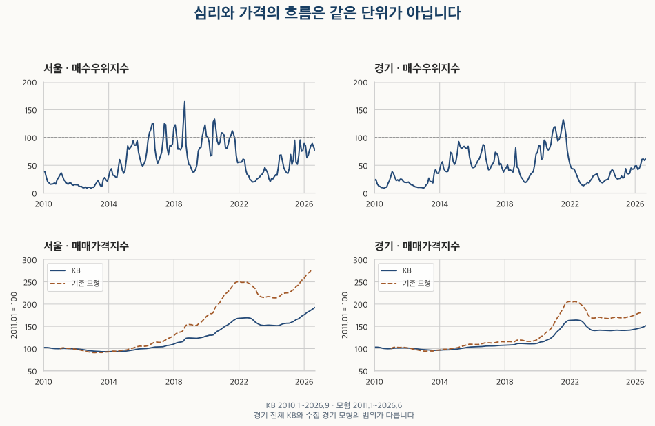
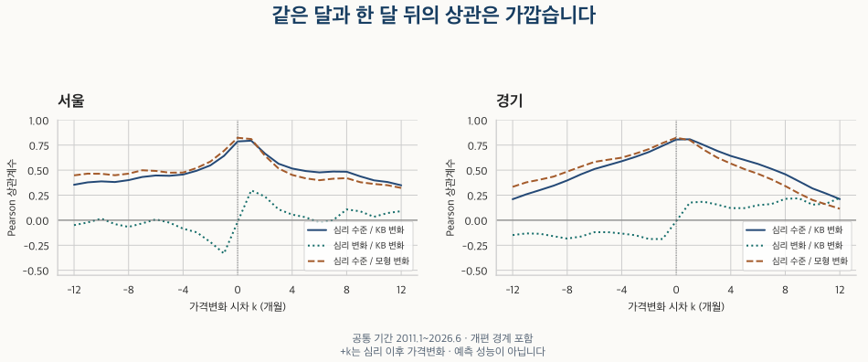

시장 심리 읽기 · 시차와 전환점
매수우위지수는 집값보다 먼저 움직일까? 시차와 전환점 비교
서울·경기 매수심리와 가격을 앞뒤 12개월로 비교합니다. 2013·2019·2022·2024년 전환점과 기간·변환·모형 반례를 확인하고, 관측월의 선후를 매수 신호로 읽기 어려운 이유를 설명합니다.
분석 기간 · KB 2010.1~2026.9 · 모형 2011.1~2026.6 | 자료 기준일 · 공식 설명·매수우위 화면 확인 2026-10-17
‘매수 심리가 살아났으니 몇 달 뒤 집값도 오른다’는 말을 어떻게 확인할까요? 서울·경기 월간 매수우위지수와 아파트 매매가격을 같은 달부터 앞뒤 12개월까지 비교했습니다. 전체기간의 높은 상관은 확인되지만, 일정한 선행 기간이나 매수 타이밍으로 읽기에는 반례가 있습니다.
매수우위지수와 집값은 무엇을 측정하나요?
매수우위지수는 중개업소의 응답으로 만든 100 + 매수자가 많다는 응답 비중 − 매도자가 많다는 응답 비중입니다. 100 초과와 전월 대비 상승은 다른 사실이며, 실제 매수자 수나 매매 계약 건수가 아닙니다. 산식과 응답 구성을 먼저 확인하려면 매수우위지수 100의 뜻을 읽어 보세요.
주 비교의 집값은 KB 아파트 매매가격지수입니다. 표본 주택의 거래가격 또는 비교 사례에 따른 평가 가격을 조사하며, 개별 계약의 평균이나 매물 호가가 아닙니다. 현재 공식 개요는 표본 주택의 가격 변화율을 평균하는 방식(칼리지수)과 지역별 주택재고 가중을 설명합니다. 심리는 주택시장에 대한 응답, 가격은 아파트 조사 지수이므로 모집단도 완전히 같지 않습니다. KB 월간 원표와 공식 조사 개요를 기준으로 읽었습니다.
월간 조사 기준일은 15일이 포함된 주의 월요일입니다. 원표는 월말 또는 익월 초 발표, 개요는 익월 1일 공표로 설명합니다. 심리의 관측월이 3월이고 가격의 관측월이 4월이라고 해서, 3월 초에 4월 가격을 알았던 것은 아닙니다. 이 글은 현재 보유한 과거 이력을 비교하며, 당시 발표본과 실제 입수 시간을 복원한 투자 실험이 아닙니다.

앞뒤 12개월을 모두 보면 몇 달 선행하나요?
여기서 +1개월은 이번 달 심리와 다음 달 가격변화를, −1개월은 이번 달 심리와 지난달 가격변화를 짝짓습니다. 가격변화는 가격지수의 로그 전월변화입니다. Pearson은 선형 관계, Spearman은 값의 순위 관계를 나타내며 둘 다 −1~1 범위입니다. 상관계수는 예측 적중률이 아닙니다. 0.8을 ‘80% 맞았다’고 읽으면 안 됩니다.
| 가격 기준 | 시차 k(개월) | 월 쌍 | Pearson r | Spearman ρ |
|---|---|---|---|---|
| 서울 KB | +0 | 200 | 0.795 | 0.884 |
| 서울 KB | +1 | 200 | 0.803 | 0.890 |
| 경기 KB | +0 | 200 | 0.808 | 0.891 |
| 경기 KB | +1 | 200 | 0.808 | 0.889 |
전체기간 KB의 Pearson 최대는 두 지역 모두 +1개월이지만, 같은 달과의 차이는 서울 약 0.007·경기 약 0.001입니다. 경기의 Spearman은 오히려 같은 달 0.891이 한 달 뒤 0.889보다 높습니다. 이를 일정한 한 달 선행 규칙으로 확정할 근거는 부족합니다. 최대값을 찾은 바로 그 기간에서 그 값을 예측 성능으로 평가하지도 않았습니다.

아래에는 세 변환의 전체 25시차와 개편 경계를 제외한 주 비교를 남겼습니다. 모형의 전체 보유 기간은 2011년 1월~2026년 6월로 KB보다 짧습니다. 시차마다 짝의 시작·끝 달도 달라질 수 있습니다. 각 시차의 유효 월쌍 수를 확인하고, 모형과 기간을 맞추려면 다음 절의 공통 기간 표를 사용하세요.
심리 수준 / 가격 변화 · −12~+12개월 전체 시차 펼치기
| 가격 기준 | 시차 k(개월) | 월 쌍 | Pearson r | Spearman ρ |
|---|---|---|---|---|
| 서울 KB | -12 | 188 | 0.389 | 0.508 |
| 서울 KB | -11 | 189 | 0.408 | 0.539 |
| 서울 KB | -10 | 190 | 0.417 | 0.555 |
| 서울 KB | -9 | 191 | 0.412 | 0.560 |
| 서울 KB | -8 | 192 | 0.427 | 0.572 |
| 서울 KB | -7 | 193 | 0.455 | 0.597 |
| 서울 KB | -6 | 194 | 0.469 | 0.611 |
| 서울 KB | -5 | 195 | 0.469 | 0.614 |
| 서울 KB | -4 | 196 | 0.482 | 0.634 |
| 서울 KB | -3 | 197 | 0.518 | 0.678 |
| 서울 KB | -2 | 198 | 0.570 | 0.733 |
| 서울 KB | -1 | 199 | 0.660 | 0.807 |
| 서울 KB | +0 | 200 | 0.795 | 0.884 |
| 서울 KB | +1 | 200 | 0.803 | 0.890 |
| 서울 KB | +2 | 199 | 0.681 | 0.808 |
| 서울 KB | +3 | 198 | 0.580 | 0.724 |
| 서울 KB | +4 | 197 | 0.529 | 0.665 |
| 서울 KB | +5 | 196 | 0.503 | 0.622 |
| 서울 KB | +6 | 195 | 0.492 | 0.587 |
| 서울 KB | +7 | 194 | 0.502 | 0.569 |
| 서울 KB | +8 | 193 | 0.499 | 0.564 |
| 서울 KB | +9 | 192 | 0.456 | 0.545 |
| 서울 KB | +10 | 191 | 0.419 | 0.525 |
| 서울 KB | +11 | 190 | 0.402 | 0.513 |
| 서울 KB | +12 | 189 | 0.368 | 0.489 |
| 경기 KB | -12 | 188 | 0.232 | 0.327 |
| 경기 KB | -11 | 189 | 0.278 | 0.369 |
| 경기 KB | -10 | 190 | 0.318 | 0.406 |
| 경기 KB | -9 | 191 | 0.358 | 0.434 |
| 경기 KB | -8 | 192 | 0.407 | 0.471 |
| 경기 KB | -7 | 193 | 0.466 | 0.519 |
| 경기 KB | -6 | 194 | 0.520 | 0.565 |
| 경기 KB | -5 | 195 | 0.560 | 0.606 |
| 경기 KB | -4 | 196 | 0.600 | 0.649 |
| 경기 KB | -3 | 197 | 0.643 | 0.700 |
| 경기 KB | -2 | 198 | 0.692 | 0.759 |
| 경기 KB | -1 | 199 | 0.750 | 0.830 |
| 경기 KB | +0 | 200 | 0.808 | 0.891 |
| 경기 KB | +1 | 200 | 0.808 | 0.889 |
| 경기 KB | +2 | 199 | 0.751 | 0.822 |
| 경기 KB | +3 | 198 | 0.687 | 0.743 |
| 경기 KB | +4 | 197 | 0.631 | 0.674 |
| 경기 KB | +5 | 196 | 0.588 | 0.621 |
| 경기 KB | +6 | 195 | 0.547 | 0.563 |
| 경기 KB | +7 | 194 | 0.499 | 0.501 |
| 경기 KB | +8 | 193 | 0.445 | 0.436 |
| 경기 KB | +9 | 192 | 0.376 | 0.374 |
| 경기 KB | +10 | 191 | 0.306 | 0.329 |
| 경기 KB | +11 | 190 | 0.256 | 0.296 |
| 경기 KB | +12 | 189 | 0.204 | 0.265 |
| 수도권 KB | -12 | 188 | 0.285 | 0.442 |
| 수도권 KB | -11 | 189 | 0.321 | 0.475 |
| 수도권 KB | -10 | 190 | 0.345 | 0.495 |
| 수도권 KB | -9 | 191 | 0.369 | 0.509 |
| 수도권 KB | -8 | 192 | 0.405 | 0.536 |
| 수도권 KB | -7 | 193 | 0.452 | 0.573 |
| 수도권 KB | -6 | 194 | 0.494 | 0.604 |
| 수도권 KB | -5 | 195 | 0.526 | 0.629 |
| 수도권 KB | -4 | 196 | 0.559 | 0.660 |
| 수도권 KB | -3 | 197 | 0.601 | 0.706 |
| 수도권 KB | -2 | 198 | 0.648 | 0.761 |
| 수도권 KB | -1 | 199 | 0.715 | 0.833 |
| 수도권 KB | +0 | 200 | 0.793 | 0.900 |
| 수도권 KB | +1 | 200 | 0.798 | 0.899 |
| 수도권 KB | +2 | 199 | 0.732 | 0.830 |
| 수도권 KB | +3 | 198 | 0.665 | 0.751 |
| 수도권 KB | +4 | 197 | 0.613 | 0.689 |
| 수도권 KB | +5 | 196 | 0.578 | 0.638 |
| 수도권 KB | +6 | 195 | 0.547 | 0.594 |
| 수도권 KB | +7 | 194 | 0.516 | 0.554 |
| 수도권 KB | +8 | 193 | 0.479 | 0.517 |
| 수도권 KB | +9 | 192 | 0.422 | 0.475 |
| 수도권 KB | +10 | 191 | 0.365 | 0.440 |
| 수도권 KB | +11 | 190 | 0.330 | 0.416 |
| 수도권 KB | +12 | 189 | 0.290 | 0.390 |
| 서울 모형 | -12 | 176 | 0.452 | 0.506 |
| 서울 모형 | -11 | 177 | 0.467 | 0.532 |
| 서울 모형 | -10 | 178 | 0.468 | 0.538 |
| 서울 모형 | -9 | 179 | 0.455 | 0.535 |
| 서울 모형 | -8 | 180 | 0.469 | 0.543 |
| 서울 모형 | -7 | 181 | 0.501 | 0.569 |
| 서울 모형 | -6 | 182 | 0.496 | 0.571 |
| 서울 모형 | -5 | 183 | 0.480 | 0.560 |
| 서울 모형 | -4 | 184 | 0.479 | 0.574 |
| 서울 모형 | -3 | 185 | 0.523 | 0.625 |
| 서울 모형 | -2 | 185 | 0.586 | 0.688 |
| 서울 모형 | -1 | 185 | 0.694 | 0.773 |
| 서울 모형 | +0 | 185 | 0.823 | 0.857 |
| 서울 모형 | +1 | 185 | 0.811 | 0.837 |
| 서울 모형 | +2 | 185 | 0.641 | 0.705 |
| 서울 모형 | +3 | 185 | 0.511 | 0.590 |
| 서울 모형 | +4 | 185 | 0.446 | 0.510 |
| 서울 모형 | +5 | 185 | 0.414 | 0.465 |
| 서울 모형 | +6 | 185 | 0.399 | 0.431 |
| 서울 모형 | +7 | 185 | 0.416 | 0.422 |
| 서울 모형 | +8 | 185 | 0.425 | 0.430 |
| 서울 모형 | +9 | 185 | 0.388 | 0.420 |
| 서울 모형 | +10 | 185 | 0.375 | 0.414 |
| 서울 모형 | +11 | 185 | 0.368 | 0.409 |
| 서울 모형 | +12 | 185 | 0.347 | 0.399 |
| 수집 경기 모형 | -12 | 176 | 0.333 | 0.420 |
| 수집 경기 모형 | -11 | 177 | 0.377 | 0.461 |
| 수집 경기 모형 | -10 | 178 | 0.405 | 0.474 |
| 수집 경기 모형 | -9 | 179 | 0.437 | 0.478 |
| 수집 경기 모형 | -8 | 180 | 0.486 | 0.506 |
| 수집 경기 모형 | -7 | 181 | 0.536 | 0.545 |
| 수집 경기 모형 | -6 | 182 | 0.584 | 0.588 |
| 수집 경기 모형 | -5 | 183 | 0.605 | 0.611 |
| 수집 경기 모형 | -4 | 184 | 0.625 | 0.631 |
| 수집 경기 모형 | -3 | 185 | 0.665 | 0.669 |
| 수집 경기 모형 | -2 | 185 | 0.710 | 0.723 |
| 수집 경기 모형 | -1 | 185 | 0.771 | 0.791 |
| 수집 경기 모형 | +0 | 185 | 0.823 | 0.834 |
| 수집 경기 모형 | +1 | 185 | 0.799 | 0.797 |
| 수집 경기 모형 | +2 | 185 | 0.697 | 0.681 |
| 수집 경기 모형 | +3 | 185 | 0.609 | 0.569 |
| 수집 경기 모형 | +4 | 185 | 0.545 | 0.486 |
| 수집 경기 모형 | +5 | 185 | 0.489 | 0.414 |
| 수집 경기 모형 | +6 | 185 | 0.442 | 0.349 |
| 수집 경기 모형 | +7 | 185 | 0.388 | 0.292 |
| 수집 경기 모형 | +8 | 185 | 0.326 | 0.237 |
| 수집 경기 모형 | +9 | 185 | 0.256 | 0.184 |
| 수집 경기 모형 | +10 | 185 | 0.194 | 0.155 |
| 수집 경기 모형 | +11 | 185 | 0.155 | 0.133 |
| 수집 경기 모형 | +12 | 185 | 0.120 | 0.122 |
심리 변화 / 가격 변화 · −12~+12개월 전체 시차 펼치기
| 가격 기준 | 시차 k(개월) | 월 쌍 | Pearson r | Spearman ρ |
|---|---|---|---|---|
| 서울 KB | -12 | 188 | -0.043 | -0.024 |
| 서울 KB | -11 | 189 | -0.020 | 0.006 |
| 서울 KB | -10 | 190 | 0.014 | 0.032 |
| 서울 KB | -9 | 191 | -0.037 | 0.014 |
| 서울 KB | -8 | 192 | -0.064 | -0.032 |
| 서울 KB | -7 | 193 | -0.035 | -0.022 |
| 서울 KB | -6 | 194 | -0.001 | -0.009 |
| 서울 KB | -5 | 195 | -0.031 | -0.049 |
| 서울 KB | -4 | 196 | -0.088 | -0.106 |
| 서울 KB | -3 | 197 | -0.124 | -0.160 |
| 서울 KB | -2 | 198 | -0.218 | -0.208 |
| 서울 KB | -1 | 199 | -0.325 | -0.185 |
| 서울 KB | +0 | 200 | -0.017 | 0.033 |
| 서울 KB | +1 | 199 | 0.296 | 0.282 |
| 서울 KB | +2 | 198 | 0.245 | 0.309 |
| 서울 KB | +3 | 197 | 0.122 | 0.222 |
| 서울 KB | +4 | 196 | 0.059 | 0.160 |
| 서울 KB | +5 | 195 | 0.025 | 0.087 |
| 서울 KB | +6 | 194 | -0.026 | 0.024 |
| 서울 KB | +7 | 193 | 0.006 | 0.009 |
| 서울 KB | +8 | 192 | 0.103 | 0.049 |
| 서울 KB | +9 | 191 | 0.087 | 0.052 |
| 서울 KB | +10 | 190 | 0.039 | 0.032 |
| 서울 KB | +11 | 189 | 0.084 | 0.078 |
| 서울 KB | +12 | 188 | 0.075 | 0.108 |
| 경기 KB | -12 | 188 | -0.139 | -0.111 |
| 경기 KB | -11 | 189 | -0.120 | -0.064 |
| 경기 KB | -10 | 190 | -0.125 | -0.052 |
| 경기 KB | -9 | 191 | -0.153 | -0.093 |
| 경기 KB | -8 | 192 | -0.183 | -0.144 |
| 경기 KB | -7 | 193 | -0.169 | -0.137 |
| 경기 KB | -6 | 194 | -0.130 | -0.121 |
| 경기 KB | -5 | 195 | -0.129 | -0.129 |
| 경기 KB | -4 | 196 | -0.141 | -0.153 |
| 경기 KB | -3 | 197 | -0.154 | -0.181 |
| 경기 KB | -2 | 198 | -0.186 | -0.225 |
| 경기 KB | -1 | 199 | -0.182 | -0.191 |
| 경기 KB | +0 | 200 | -0.004 | 0.018 |
| 경기 KB | +1 | 199 | 0.182 | 0.235 |
| 경기 KB | +2 | 198 | 0.198 | 0.299 |
| 경기 KB | +3 | 197 | 0.174 | 0.278 |
| 경기 KB | +4 | 196 | 0.127 | 0.230 |
| 경기 KB | +5 | 195 | 0.121 | 0.224 |
| 경기 KB | +6 | 194 | 0.145 | 0.217 |
| 경기 KB | +7 | 193 | 0.162 | 0.209 |
| 경기 KB | +8 | 192 | 0.211 | 0.211 |
| 경기 KB | +9 | 191 | 0.216 | 0.176 |
| 경기 KB | +10 | 190 | 0.152 | 0.144 |
| 경기 KB | +11 | 189 | 0.163 | 0.144 |
| 경기 KB | +12 | 188 | 0.208 | 0.130 |
| 수도권 KB | -12 | 188 | -0.100 | -0.067 |
| 수도권 KB | -11 | 189 | -0.068 | -0.023 |
| 수도권 KB | -10 | 190 | -0.069 | -0.015 |
| 수도권 KB | -9 | 191 | -0.104 | -0.070 |
| 수도권 KB | -8 | 192 | -0.137 | -0.116 |
| 수도권 KB | -7 | 193 | -0.126 | -0.105 |
| 수도권 KB | -6 | 194 | -0.095 | -0.091 |
| 수도권 KB | -5 | 195 | -0.100 | -0.117 |
| 수도권 KB | -4 | 196 | -0.126 | -0.153 |
| 수도권 KB | -3 | 197 | -0.144 | -0.179 |
| 수도권 KB | -2 | 198 | -0.197 | -0.222 |
| 수도권 KB | -1 | 199 | -0.232 | -0.212 |
| 수도권 KB | +0 | 200 | -0.017 | 0.014 |
| 수도권 KB | +1 | 199 | 0.195 | 0.252 |
| 수도권 KB | +2 | 198 | 0.194 | 0.298 |
| 수도권 KB | +3 | 197 | 0.150 | 0.244 |
| 수도권 KB | +4 | 196 | 0.100 | 0.196 |
| 수도권 KB | +5 | 195 | 0.084 | 0.149 |
| 수도권 KB | +6 | 194 | 0.085 | 0.116 |
| 수도권 KB | +7 | 193 | 0.104 | 0.100 |
| 수도권 KB | +8 | 192 | 0.164 | 0.122 |
| 수도권 KB | +9 | 191 | 0.162 | 0.117 |
| 수도권 KB | +10 | 190 | 0.101 | 0.089 |
| 수도권 KB | +11 | 189 | 0.115 | 0.103 |
| 수도권 KB | +12 | 188 | 0.147 | 0.117 |
| 서울 모형 | -12 | 176 | -0.035 | -0.056 |
| 서울 모형 | -11 | 177 | -0.005 | 0.007 |
| 서울 모형 | -10 | 178 | 0.025 | 0.026 |
| 서울 모형 | -9 | 179 | -0.035 | 0.004 |
| 서울 모형 | -8 | 180 | -0.076 | -0.054 |
| 서울 모형 | -7 | 181 | 0.010 | -0.023 |
| 서울 모형 | -6 | 182 | 0.034 | 0.024 |
| 서울 모형 | -5 | 183 | -0.003 | -0.036 |
| 서울 모형 | -4 | 184 | -0.102 | -0.126 |
| 서울 모형 | -3 | 185 | -0.150 | -0.184 |
| 서울 모형 | -2 | 185 | -0.253 | -0.235 |
| 서울 모형 | -1 | 185 | -0.299 | -0.177 |
| 서울 모형 | +0 | 185 | 0.029 | 0.124 |
| 서울 모형 | +1 | 185 | 0.394 | 0.420 |
| 서울 모형 | +2 | 185 | 0.301 | 0.396 |
| 서울 모형 | +3 | 185 | 0.147 | 0.249 |
| 서울 모형 | +4 | 185 | 0.075 | 0.138 |
| 서울 모형 | +5 | 185 | 0.033 | 0.070 |
| 서울 모형 | +6 | 185 | -0.044 | -0.012 |
| 서울 모형 | +7 | 185 | -0.022 | -0.042 |
| 서울 모형 | +8 | 185 | 0.088 | 0.024 |
| 서울 모형 | +9 | 185 | 0.030 | 0.026 |
| 서울 모형 | +10 | 185 | 0.016 | 0.024 |
| 서울 모형 | +11 | 185 | 0.049 | 0.045 |
| 서울 모형 | +12 | 185 | 0.072 | 0.122 |
| 수집 경기 모형 | -12 | 176 | -0.134 | -0.130 |
| 수집 경기 모형 | -11 | 177 | -0.086 | -0.022 |
| 수집 경기 모형 | -10 | 178 | -0.097 | 0.004 |
| 수집 경기 모형 | -9 | 179 | -0.151 | -0.061 |
| 수집 경기 모형 | -8 | 180 | -0.151 | -0.113 |
| 수집 경기 모형 | -7 | 181 | -0.145 | -0.120 |
| 수집 경기 모형 | -6 | 182 | -0.068 | -0.066 |
| 수집 경기 모형 | -5 | 183 | -0.063 | -0.070 |
| 수집 경기 모형 | -4 | 184 | -0.123 | -0.128 |
| 수집 경기 모형 | -3 | 185 | -0.140 | -0.183 |
| 수집 경기 모형 | -2 | 185 | -0.185 | -0.233 |
| 수집 경기 모형 | -1 | 185 | -0.158 | -0.130 |
| 수집 경기 모형 | +0 | 185 | 0.074 | 0.134 |
| 수집 경기 모형 | +1 | 185 | 0.306 | 0.392 |
| 수집 경기 모형 | +2 | 185 | 0.264 | 0.407 |
| 수집 경기 모형 | +3 | 185 | 0.188 | 0.320 |
| 수집 경기 모형 | +4 | 185 | 0.167 | 0.285 |
| 수집 경기 모형 | +5 | 185 | 0.137 | 0.237 |
| 수집 경기 모형 | +6 | 185 | 0.162 | 0.184 |
| 수집 경기 모형 | +7 | 185 | 0.191 | 0.173 |
| 수집 경기 모형 | +8 | 185 | 0.216 | 0.187 |
| 수집 경기 모형 | +9 | 185 | 0.192 | 0.144 |
| 수집 경기 모형 | +10 | 185 | 0.123 | 0.108 |
| 수집 경기 모형 | +11 | 185 | 0.111 | 0.081 |
| 수집 경기 모형 | +12 | 185 | 0.190 | 0.118 |
심리 수준 / 가격 수준 · −12~+12개월 전체 시차 펼치기
| 가격 기준 | 시차 k(개월) | 월 쌍 | Pearson r | Spearman ρ |
|---|---|---|---|---|
| 서울 KB | -12 | 189 | -0.004 | 0.078 |
| 서울 KB | -11 | 190 | 0.012 | 0.103 |
| 서울 KB | -10 | 191 | 0.029 | 0.127 |
| 서울 KB | -9 | 192 | 0.047 | 0.150 |
| 서울 KB | -8 | 193 | 0.064 | 0.172 |
| 서울 KB | -7 | 194 | 0.083 | 0.192 |
| 서울 KB | -6 | 195 | 0.101 | 0.214 |
| 서울 KB | -5 | 196 | 0.120 | 0.236 |
| 서울 KB | -4 | 197 | 0.138 | 0.260 |
| 서울 KB | -3 | 198 | 0.157 | 0.284 |
| 서울 KB | -2 | 199 | 0.176 | 0.310 |
| 서울 KB | -1 | 200 | 0.197 | 0.336 |
| 서울 KB | +0 | 201 | 0.221 | 0.365 |
| 서울 KB | +1 | 200 | 0.240 | 0.388 |
| 서울 KB | +2 | 199 | 0.254 | 0.406 |
| 서울 KB | +3 | 198 | 0.262 | 0.421 |
| 서울 KB | +4 | 197 | 0.270 | 0.434 |
| 서울 KB | +5 | 196 | 0.280 | 0.448 |
| 서울 KB | +6 | 195 | 0.292 | 0.462 |
| 서울 KB | +7 | 194 | 0.306 | 0.476 |
| 서울 KB | +8 | 193 | 0.313 | 0.485 |
| 서울 KB | +9 | 192 | 0.318 | 0.493 |
| 서울 KB | +10 | 191 | 0.325 | 0.505 |
| 서울 KB | +11 | 190 | 0.332 | 0.516 |
| 서울 KB | +12 | 189 | 0.332 | 0.521 |
| 경기 KB | -12 | 189 | -0.235 | -0.139 |
| 경기 KB | -11 | 190 | -0.219 | -0.121 |
| 경기 KB | -10 | 191 | -0.201 | -0.102 |
| 경기 KB | -9 | 192 | -0.179 | -0.081 |
| 경기 KB | -8 | 193 | -0.155 | -0.060 |
| 경기 KB | -7 | 194 | -0.128 | -0.038 |
| 경기 KB | -6 | 195 | -0.099 | -0.014 |
| 경기 KB | -5 | 196 | -0.069 | 0.013 |
| 경기 KB | -4 | 197 | -0.036 | 0.043 |
| 경기 KB | -3 | 198 | -0.003 | 0.075 |
| 경기 KB | -2 | 199 | 0.033 | 0.109 |
| 경기 KB | -1 | 200 | 0.070 | 0.144 |
| 경기 KB | +0 | 201 | 0.109 | 0.182 |
| 경기 KB | +1 | 200 | 0.142 | 0.213 |
| 경기 KB | +2 | 199 | 0.174 | 0.242 |
| 경기 KB | +3 | 198 | 0.202 | 0.269 |
| 경기 KB | +4 | 197 | 0.228 | 0.291 |
| 경기 KB | +5 | 196 | 0.254 | 0.312 |
| 경기 KB | +6 | 195 | 0.281 | 0.331 |
| 경기 KB | +7 | 194 | 0.306 | 0.348 |
| 경기 KB | +8 | 193 | 0.326 | 0.361 |
| 경기 KB | +9 | 192 | 0.344 | 0.371 |
| 경기 KB | +10 | 191 | 0.360 | 0.383 |
| 경기 KB | +11 | 190 | 0.373 | 0.394 |
| 경기 KB | +12 | 189 | 0.383 | 0.403 |
| 수도권 KB | -12 | 189 | -0.168 | -0.041 |
| 수도권 KB | -11 | 190 | -0.152 | -0.019 |
| 수도권 KB | -10 | 191 | -0.134 | 0.003 |
| 수도권 KB | -9 | 192 | -0.114 | 0.025 |
| 수도권 KB | -8 | 193 | -0.093 | 0.045 |
| 수도권 KB | -7 | 194 | -0.070 | 0.065 |
| 수도권 KB | -6 | 195 | -0.046 | 0.086 |
| 수도권 KB | -5 | 196 | -0.020 | 0.108 |
| 수도권 KB | -4 | 197 | 0.006 | 0.132 |
| 수도권 KB | -3 | 198 | 0.034 | 0.160 |
| 수도권 KB | -2 | 199 | 0.063 | 0.191 |
| 수도권 KB | -1 | 200 | 0.093 | 0.223 |
| 수도권 KB | +0 | 201 | 0.126 | 0.257 |
| 수도권 KB | +1 | 200 | 0.153 | 0.286 |
| 수도권 KB | +2 | 199 | 0.179 | 0.315 |
| 수도권 KB | +3 | 198 | 0.201 | 0.339 |
| 수도권 KB | +4 | 197 | 0.221 | 0.361 |
| 수도권 KB | +5 | 196 | 0.242 | 0.383 |
| 수도권 KB | +6 | 195 | 0.264 | 0.403 |
| 수도권 KB | +7 | 194 | 0.286 | 0.422 |
| 수도권 KB | +8 | 193 | 0.303 | 0.435 |
| 수도권 KB | +9 | 192 | 0.318 | 0.446 |
| 수도권 KB | +10 | 191 | 0.332 | 0.460 |
| 수도권 KB | +11 | 190 | 0.345 | 0.474 |
| 수도권 KB | +12 | 189 | 0.354 | 0.484 |
| 서울 모형 | -12 | 177 | -0.037 | 0.073 |
| 서울 모형 | -11 | 178 | -0.016 | 0.099 |
| 서울 모형 | -10 | 179 | 0.005 | 0.125 |
| 서울 모형 | -9 | 180 | 0.026 | 0.149 |
| 서울 모형 | -8 | 181 | 0.046 | 0.174 |
| 서울 모형 | -7 | 182 | 0.067 | 0.200 |
| 서울 모형 | -6 | 183 | 0.088 | 0.225 |
| 서울 모형 | -5 | 184 | 0.108 | 0.250 |
| 서울 모형 | -4 | 185 | 0.127 | 0.275 |
| 서울 모형 | -3 | 186 | 0.147 | 0.300 |
| 서울 모형 | -2 | 186 | 0.163 | 0.324 |
| 서울 모형 | -1 | 186 | 0.180 | 0.347 |
| 서울 모형 | +0 | 186 | 0.199 | 0.371 |
| 서울 모형 | +1 | 186 | 0.220 | 0.396 |
| 서울 모형 | +2 | 186 | 0.238 | 0.422 |
| 서울 모형 | +3 | 186 | 0.257 | 0.445 |
| 서울 모형 | +4 | 186 | 0.274 | 0.465 |
| 서울 모형 | +5 | 186 | 0.285 | 0.480 |
| 서울 모형 | +6 | 186 | 0.294 | 0.491 |
| 서울 모형 | +7 | 186 | 0.306 | 0.506 |
| 서울 모형 | +8 | 186 | 0.319 | 0.520 |
| 서울 모형 | +9 | 186 | 0.325 | 0.528 |
| 서울 모형 | +10 | 186 | 0.336 | 0.540 |
| 서울 모형 | +11 | 186 | 0.350 | 0.551 |
| 서울 모형 | +12 | 186 | 0.362 | 0.560 |
| 수집 경기 모형 | -12 | 177 | -0.266 | -0.169 |
| 수집 경기 모형 | -11 | 178 | -0.244 | -0.143 |
| 수집 경기 모형 | -10 | 179 | -0.220 | -0.117 |
| 수집 경기 모형 | -9 | 180 | -0.196 | -0.096 |
| 수집 경기 모형 | -8 | 181 | -0.169 | -0.074 |
| 수집 경기 모형 | -7 | 182 | -0.141 | -0.050 |
| 수집 경기 모형 | -6 | 183 | -0.109 | -0.020 |
| 수집 경기 모형 | -5 | 184 | -0.077 | 0.010 |
| 수집 경기 모형 | -4 | 185 | -0.044 | 0.039 |
| 수집 경기 모형 | -3 | 186 | -0.010 | 0.066 |
| 수집 경기 모형 | -2 | 186 | 0.021 | 0.089 |
| 수집 경기 모형 | -1 | 186 | 0.055 | 0.117 |
| 수집 경기 모형 | +0 | 186 | 0.093 | 0.152 |
| 수집 경기 모형 | +1 | 186 | 0.130 | 0.189 |
| 수집 경기 모형 | +2 | 186 | 0.168 | 0.225 |
| 수집 경기 모형 | +3 | 186 | 0.203 | 0.256 |
| 수집 경기 모형 | +4 | 186 | 0.237 | 0.283 |
| 수집 경기 모형 | +5 | 186 | 0.266 | 0.305 |
| 수집 경기 모형 | +6 | 186 | 0.293 | 0.325 |
| 수집 경기 모형 | +7 | 186 | 0.318 | 0.344 |
| 수집 경기 모형 | +8 | 186 | 0.340 | 0.361 |
| 수집 경기 모형 | +9 | 186 | 0.358 | 0.376 |
| 수집 경기 모형 | +10 | 186 | 0.375 | 0.395 |
| 수집 경기 모형 | +11 | 186 | 0.389 | 0.410 |
| 수집 경기 모형 | +12 | 186 | 0.401 | 0.426 |
개편 경계를 제외한 전체 시차 펼치기
| 가격 기준 | 시차 k(개월) | 월 쌍 | Pearson r | Spearman ρ |
|---|---|---|---|---|
| 서울 KB | -12 | 166 | 0.385 | 0.528 |
| 서울 KB | -11 | 168 | 0.399 | 0.549 |
| 서울 KB | -10 | 170 | 0.402 | 0.556 |
| 서울 KB | -9 | 172 | 0.394 | 0.557 |
| 서울 KB | -8 | 174 | 0.404 | 0.567 |
| 서울 KB | -7 | 176 | 0.430 | 0.591 |
| 서울 KB | -6 | 178 | 0.449 | 0.605 |
| 서울 KB | -5 | 180 | 0.449 | 0.607 |
| 서울 KB | -4 | 183 | 0.460 | 0.622 |
| 서울 KB | -3 | 186 | 0.497 | 0.667 |
| 서울 KB | -2 | 189 | 0.556 | 0.728 |
| 서울 KB | -1 | 193 | 0.655 | 0.807 |
| 서울 KB | +0 | 197 | 0.797 | 0.885 |
| 서울 KB | +1 | 197 | 0.805 | 0.892 |
| 서울 KB | +2 | 193 | 0.680 | 0.809 |
| 서울 KB | +3 | 189 | 0.577 | 0.722 |
| 서울 KB | +4 | 186 | 0.518 | 0.658 |
| 서울 KB | +5 | 183 | 0.496 | 0.613 |
| 서울 KB | +6 | 180 | 0.499 | 0.587 |
| 서울 KB | +7 | 178 | 0.524 | 0.573 |
| 서울 KB | +8 | 176 | 0.531 | 0.574 |
| 서울 KB | +9 | 174 | 0.492 | 0.568 |
| 서울 KB | +10 | 172 | 0.461 | 0.559 |
| 서울 KB | +11 | 170 | 0.454 | 0.560 |
| 서울 KB | +12 | 168 | 0.431 | 0.551 |
| 경기 KB | -12 | 166 | 0.239 | 0.370 |
| 경기 KB | -11 | 168 | 0.276 | 0.397 |
| 경기 KB | -10 | 170 | 0.315 | 0.419 |
| 경기 KB | -9 | 172 | 0.354 | 0.434 |
| 경기 KB | -8 | 174 | 0.403 | 0.463 |
| 경기 KB | -7 | 176 | 0.461 | 0.506 |
| 경기 KB | -6 | 178 | 0.513 | 0.545 |
| 경기 KB | -5 | 180 | 0.552 | 0.578 |
| 경기 KB | -4 | 183 | 0.592 | 0.624 |
| 경기 KB | -3 | 186 | 0.638 | 0.683 |
| 경기 KB | -2 | 189 | 0.689 | 0.752 |
| 경기 KB | -1 | 193 | 0.750 | 0.828 |
| 경기 KB | +0 | 197 | 0.810 | 0.891 |
| 경기 KB | +1 | 197 | 0.811 | 0.891 |
| 경기 KB | +2 | 193 | 0.758 | 0.824 |
| 경기 KB | +3 | 189 | 0.706 | 0.742 |
| 경기 KB | +4 | 186 | 0.650 | 0.670 |
| 경기 KB | +5 | 183 | 0.612 | 0.617 |
| 경기 KB | +6 | 180 | 0.581 | 0.560 |
| 경기 KB | +7 | 178 | 0.537 | 0.496 |
| 경기 KB | +8 | 176 | 0.489 | 0.436 |
| 경기 KB | +9 | 174 | 0.422 | 0.384 |
| 경기 KB | +10 | 172 | 0.357 | 0.357 |
| 경기 KB | +11 | 170 | 0.322 | 0.352 |
| 경기 KB | +12 | 168 | 0.294 | 0.349 |
| 수도권 KB | -12 | 166 | 0.293 | 0.476 |
| 수도권 KB | -11 | 168 | 0.319 | 0.498 |
| 수도권 KB | -10 | 170 | 0.340 | 0.504 |
| 수도권 KB | -9 | 172 | 0.362 | 0.508 |
| 수도권 KB | -8 | 174 | 0.395 | 0.531 |
| 수도권 KB | -7 | 176 | 0.442 | 0.566 |
| 수도권 KB | -6 | 178 | 0.485 | 0.596 |
| 수도권 KB | -5 | 180 | 0.515 | 0.617 |
| 수도권 KB | -4 | 183 | 0.549 | 0.649 |
| 수도권 KB | -3 | 186 | 0.593 | 0.699 |
| 수도권 KB | -2 | 189 | 0.644 | 0.761 |
| 수도권 KB | -1 | 193 | 0.714 | 0.834 |
| 수도권 KB | +0 | 197 | 0.796 | 0.901 |
| 수도권 KB | +1 | 197 | 0.802 | 0.902 |
| 수도권 KB | +2 | 193 | 0.739 | 0.832 |
| 수도권 KB | +3 | 189 | 0.683 | 0.751 |
| 수도권 KB | +4 | 186 | 0.631 | 0.685 |
| 수도권 KB | +5 | 183 | 0.601 | 0.634 |
| 수도권 KB | +6 | 180 | 0.583 | 0.594 |
| 수도권 KB | +7 | 178 | 0.563 | 0.555 |
| 수도권 KB | +8 | 176 | 0.535 | 0.523 |
| 수도권 KB | +9 | 174 | 0.481 | 0.489 |
| 수도권 KB | +10 | 172 | 0.429 | 0.467 |
| 수도권 KB | +11 | 170 | 0.407 | 0.464 |
| 수도권 KB | +12 | 168 | 0.388 | 0.462 |
| 서울 모형 | -12 | 154 | 0.435 | 0.484 |
| 서울 모형 | -11 | 156 | 0.446 | 0.507 |
| 서울 모형 | -10 | 158 | 0.441 | 0.503 |
| 서울 모형 | -9 | 160 | 0.430 | 0.502 |
| 서울 모형 | -8 | 162 | 0.445 | 0.514 |
| 서울 모형 | -7 | 164 | 0.475 | 0.541 |
| 서울 모형 | -6 | 166 | 0.471 | 0.547 |
| 서울 모형 | -5 | 168 | 0.456 | 0.538 |
| 서울 모형 | -4 | 171 | 0.452 | 0.550 |
| 서울 모형 | -3 | 174 | 0.499 | 0.606 |
| 서울 모형 | -2 | 176 | 0.573 | 0.679 |
| 서울 모형 | -1 | 179 | 0.689 | 0.770 |
| 서울 모형 | +0 | 182 | 0.822 | 0.854 |
| 서울 모형 | +1 | 182 | 0.810 | 0.835 |
| 서울 모형 | +2 | 179 | 0.634 | 0.699 |
| 서울 모형 | +3 | 176 | 0.497 | 0.578 |
| 서울 모형 | +4 | 175 | 0.426 | 0.489 |
| 서울 모형 | +5 | 174 | 0.392 | 0.441 |
| 서울 모형 | +6 | 173 | 0.392 | 0.420 |
| 서울 모형 | +7 | 172 | 0.420 | 0.418 |
| 서울 모형 | +8 | 171 | 0.433 | 0.429 |
| 서울 모형 | +9 | 170 | 0.406 | 0.432 |
| 서울 모형 | +10 | 169 | 0.410 | 0.443 |
| 서울 모형 | +11 | 168 | 0.408 | 0.445 |
| 서울 모형 | +12 | 167 | 0.390 | 0.438 |
| 수집 경기 모형 | -12 | 154 | 0.324 | 0.427 |
| 수집 경기 모형 | -11 | 156 | 0.363 | 0.451 |
| 수집 경기 모형 | -10 | 158 | 0.392 | 0.456 |
| 수집 경기 모형 | -9 | 160 | 0.423 | 0.454 |
| 수집 경기 모형 | -8 | 162 | 0.474 | 0.488 |
| 수집 경기 모형 | -7 | 164 | 0.523 | 0.524 |
| 수집 경기 모형 | -6 | 166 | 0.569 | 0.558 |
| 수집 경기 모형 | -5 | 168 | 0.590 | 0.580 |
| 수집 경기 모형 | -4 | 171 | 0.610 | 0.602 |
| 수집 경기 모형 | -3 | 174 | 0.655 | 0.650 |
| 수집 경기 모형 | -2 | 176 | 0.704 | 0.713 |
| 수집 경기 모형 | -1 | 179 | 0.768 | 0.788 |
| 수집 경기 모형 | +0 | 182 | 0.822 | 0.833 |
| 수집 경기 모형 | +1 | 182 | 0.798 | 0.796 |
| 수집 경기 모형 | +2 | 179 | 0.694 | 0.675 |
| 수집 경기 모형 | +3 | 176 | 0.604 | 0.555 |
| 수집 경기 모형 | +4 | 175 | 0.547 | 0.463 |
| 수집 경기 모형 | +5 | 174 | 0.487 | 0.388 |
| 수집 경기 모형 | +6 | 173 | 0.443 | 0.324 |
| 수집 경기 모형 | +7 | 172 | 0.391 | 0.268 |
| 수집 경기 모형 | +8 | 171 | 0.332 | 0.217 |
| 수집 경기 모형 | +9 | 170 | 0.269 | 0.185 |
| 수집 경기 모형 | +10 | 169 | 0.216 | 0.176 |
| 수집 경기 모형 | +11 | 168 | 0.189 | 0.174 |
| 수집 경기 모형 | +12 | 167 | 0.168 | 0.178 |
심리가 이번 달 올랐다는 말도 같은 관계를 뜻하나요?
아닙니다. 심리 수준이 높은 달과 가격변화가 큰 달의 관계, 심리 자체가 전월보다 변한 폭과 가격변화의 관계는 다릅니다. 전체기간에서 심리 변화와 한 달 뒤 KB 가격변화의 상관은 서울 0.296·경기 0.182입니다. 수준 비교의 0.803·0.808보다 작습니다. ‘지금 매수 분위기가 강하다’와 ‘이번 달 심리가 개선됐다’를 바꾸어 읽지 않아야 합니다.
2010~2015년에는 서울·경기 모두 같은 달의 Pearson 상관이 가장 높습니다. 기존 공개 모형가격도 공통 기간에서는 두 지역 모두 같은 달이 최대입니다. 심리와 가격의 수준끼리 비교하면 장기 추세가 함께 들어가 또 다른 곡선이 나옵니다. 유리한 기간·변환·가격 기준만 고르면 선행 기간을 쉽게 과장할 수 있습니다.
높은 관계를 무관하다고 버릴 필요도 없습니다. 다만 가격 상승이 매수 분위기에 영향을 주는 역방향 관계, 금리·정책 같은 공통 요인, 같은 중개업소 조사 환경, 지속되는 시장 국면이 모두 대안 설명입니다. 이 비교는 그 원인들을 분리한 실험이 아닙니다. 심리를 전월변화로 바꾼 뒤 계수가 작아졌다고 인과관계가 없다고 증명한 것도 아닙니다.
최신 한 달·세 달 제외, 초기·중기·최근, 통계 개편 전후를 나눴습니다. 2022년 11월·2026년 1월·2026년 4월 경계를 가로지르는 데 필요한 월쌍을 포함하거나 제외한 결과를 함께 남깁니다. 짧은 2026년 구간은 24월쌍 기준을 충족하지 못하므로 ‘비교 불가’이며 0이 아닙니다.
전체 보유 기간 · 2010-01~2026-09의 같은 달/한 달 뒤 비교 펼치기
| 개편 경계 | 가격 기준 | 시차 k(개월) | 월 쌍 | Pearson r | Spearman ρ |
|---|---|---|---|---|---|
| 포함 | 서울 KB | +0 | 200 | 0.795 | 0.884 |
| 포함 | 서울 KB | +1 | 200 | 0.803 | 0.890 |
| 포함 | 경기 KB | +0 | 200 | 0.808 | 0.891 |
| 포함 | 경기 KB | +1 | 200 | 0.808 | 0.889 |
| 포함 | 수도권 KB | +0 | 200 | 0.793 | 0.900 |
| 포함 | 수도권 KB | +1 | 200 | 0.798 | 0.899 |
| 포함 | 서울 모형 | +0 | 185 | 0.823 | 0.857 |
| 포함 | 서울 모형 | +1 | 185 | 0.811 | 0.837 |
| 포함 | 수집 경기 모형 | +0 | 185 | 0.823 | 0.834 |
| 포함 | 수집 경기 모형 | +1 | 185 | 0.799 | 0.797 |
| 제외 | 서울 KB | +0 | 197 | 0.797 | 0.885 |
| 제외 | 서울 KB | +1 | 197 | 0.805 | 0.892 |
| 제외 | 경기 KB | +0 | 197 | 0.810 | 0.891 |
| 제외 | 경기 KB | +1 | 197 | 0.811 | 0.891 |
| 제외 | 수도권 KB | +0 | 197 | 0.796 | 0.901 |
| 제외 | 수도권 KB | +1 | 197 | 0.802 | 0.902 |
| 제외 | 서울 모형 | +0 | 182 | 0.822 | 0.854 |
| 제외 | 서울 모형 | +1 | 182 | 0.810 | 0.835 |
| 제외 | 수집 경기 모형 | +0 | 182 | 0.822 | 0.833 |
| 제외 | 수집 경기 모형 | +1 | 182 | 0.798 | 0.796 |
최신1개월 제외 · 2010-01~2026-08의 같은 달/한 달 뒤 비교 펼치기
| 개편 경계 | 가격 기준 | 시차 k(개월) | 월 쌍 | Pearson r | Spearman ρ |
|---|---|---|---|---|---|
| 포함 | 서울 KB | +0 | 199 | 0.795 | 0.885 |
| 포함 | 서울 KB | +1 | 199 | 0.802 | 0.890 |
| 포함 | 경기 KB | +0 | 199 | 0.807 | 0.890 |
| 포함 | 경기 KB | +1 | 199 | 0.809 | 0.889 |
| 포함 | 수도권 KB | +0 | 199 | 0.793 | 0.901 |
| 포함 | 수도권 KB | +1 | 199 | 0.798 | 0.899 |
| 포함 | 서울 모형 | +0 | 185 | 0.823 | 0.857 |
| 포함 | 서울 모형 | +1 | 185 | 0.811 | 0.837 |
| 포함 | 수집 경기 모형 | +0 | 185 | 0.823 | 0.834 |
| 포함 | 수집 경기 모형 | +1 | 185 | 0.799 | 0.797 |
| 제외 | 서울 KB | +0 | 196 | 0.796 | 0.886 |
| 제외 | 서울 KB | +1 | 196 | 0.805 | 0.892 |
| 제외 | 경기 KB | +0 | 196 | 0.810 | 0.891 |
| 제외 | 경기 KB | +1 | 196 | 0.812 | 0.891 |
| 제외 | 수도권 KB | +0 | 196 | 0.796 | 0.902 |
| 제외 | 수도권 KB | +1 | 196 | 0.802 | 0.902 |
| 제외 | 서울 모형 | +0 | 182 | 0.822 | 0.854 |
| 제외 | 서울 모형 | +1 | 182 | 0.810 | 0.835 |
| 제외 | 수집 경기 모형 | +0 | 182 | 0.822 | 0.833 |
| 제외 | 수집 경기 모형 | +1 | 182 | 0.798 | 0.796 |
최신3개월 제외 · 2010-01~2026-06의 같은 달/한 달 뒤 비교 펼치기
| 개편 경계 | 가격 기준 | 시차 k(개월) | 월 쌍 | Pearson r | Spearman ρ |
|---|---|---|---|---|---|
| 포함 | 서울 KB | +0 | 197 | 0.794 | 0.886 |
| 포함 | 서울 KB | +1 | 197 | 0.800 | 0.890 |
| 포함 | 경기 KB | +0 | 197 | 0.807 | 0.889 |
| 포함 | 경기 KB | +1 | 197 | 0.808 | 0.888 |
| 포함 | 수도권 KB | +0 | 197 | 0.793 | 0.901 |
| 포함 | 수도권 KB | +1 | 197 | 0.798 | 0.900 |
| 포함 | 서울 모형 | +0 | 185 | 0.823 | 0.857 |
| 포함 | 서울 모형 | +1 | 185 | 0.811 | 0.837 |
| 포함 | 수집 경기 모형 | +0 | 185 | 0.823 | 0.834 |
| 포함 | 수집 경기 모형 | +1 | 185 | 0.799 | 0.797 |
| 제외 | 서울 KB | +0 | 194 | 0.795 | 0.887 |
| 제외 | 서울 KB | +1 | 194 | 0.803 | 0.892 |
| 제외 | 경기 KB | +0 | 194 | 0.809 | 0.890 |
| 제외 | 경기 KB | +1 | 194 | 0.811 | 0.890 |
| 제외 | 수도권 KB | +0 | 194 | 0.795 | 0.903 |
| 제외 | 수도권 KB | +1 | 194 | 0.802 | 0.903 |
| 제외 | 서울 모형 | +0 | 182 | 0.822 | 0.854 |
| 제외 | 서울 모형 | +1 | 182 | 0.810 | 0.835 |
| 제외 | 수집 경기 모형 | +0 | 182 | 0.822 | 0.833 |
| 제외 | 수집 경기 모형 | +1 | 182 | 0.798 | 0.796 |
모형 공통 기간 · 2011-01~2026-06의 같은 달/한 달 뒤 비교 펼치기
| 개편 경계 | 가격 기준 | 시차 k(개월) | 월 쌍 | Pearson r | Spearman ρ |
|---|---|---|---|---|---|
| 포함 | 서울 KB | +0 | 185 | 0.787 | 0.878 |
| 포함 | 서울 KB | +1 | 185 | 0.794 | 0.887 |
| 포함 | 경기 KB | +0 | 185 | 0.805 | 0.884 |
| 포함 | 경기 KB | +1 | 185 | 0.808 | 0.887 |
| 포함 | 수도권 KB | +0 | 185 | 0.788 | 0.895 |
| 포함 | 수도권 KB | +1 | 185 | 0.795 | 0.896 |
| 포함 | 서울 모형 | +0 | 185 | 0.823 | 0.857 |
| 포함 | 서울 모형 | +1 | 185 | 0.811 | 0.837 |
| 포함 | 수집 경기 모형 | +0 | 185 | 0.823 | 0.834 |
| 포함 | 수집 경기 모형 | +1 | 185 | 0.799 | 0.797 |
| 제외 | 서울 KB | +0 | 182 | 0.787 | 0.880 |
| 제외 | 서울 KB | +1 | 182 | 0.797 | 0.889 |
| 제외 | 경기 KB | +0 | 182 | 0.807 | 0.885 |
| 제외 | 경기 KB | +1 | 182 | 0.811 | 0.890 |
| 제외 | 수도권 KB | +0 | 182 | 0.791 | 0.897 |
| 제외 | 수도권 KB | +1 | 182 | 0.798 | 0.900 |
| 제외 | 서울 모형 | +0 | 182 | 0.822 | 0.854 |
| 제외 | 서울 모형 | +1 | 182 | 0.810 | 0.835 |
| 제외 | 수집 경기 모형 | +0 | 182 | 0.822 | 0.833 |
| 제외 | 수집 경기 모형 | +1 | 182 | 0.798 | 0.796 |
2010~2015 · 2010-01~2015-12의 같은 달/한 달 뒤 비교 펼치기
| 개편 경계 | 가격 기준 | 시차 k(개월) | 월 쌍 | Pearson r | Spearman ρ |
|---|---|---|---|---|---|
| 포함 | 서울 KB | +0 | 71 | 0.897 | 0.941 |
| 포함 | 서울 KB | +1 | 71 | 0.882 | 0.896 |
| 포함 | 경기 KB | +0 | 71 | 0.856 | 0.911 |
| 포함 | 경기 KB | +1 | 71 | 0.842 | 0.894 |
| 포함 | 수도권 KB | +0 | 71 | 0.895 | 0.944 |
| 포함 | 수도권 KB | +1 | 71 | 0.882 | 0.918 |
| 포함 | 서울 모형 | +0 | 59 | 0.813 | 0.872 |
| 포함 | 서울 모형 | +1 | 59 | 0.781 | 0.805 |
| 포함 | 수집 경기 모형 | +0 | 59 | 0.775 | 0.852 |
| 포함 | 수집 경기 모형 | +1 | 59 | 0.728 | 0.800 |
| 제외 | 서울 KB | +0 | 71 | 0.897 | 0.941 |
| 제외 | 서울 KB | +1 | 71 | 0.882 | 0.896 |
| 제외 | 경기 KB | +0 | 71 | 0.856 | 0.911 |
| 제외 | 경기 KB | +1 | 71 | 0.842 | 0.894 |
| 제외 | 수도권 KB | +0 | 71 | 0.895 | 0.944 |
| 제외 | 수도권 KB | +1 | 71 | 0.882 | 0.918 |
| 제외 | 서울 모형 | +0 | 59 | 0.813 | 0.872 |
| 제외 | 서울 모형 | +1 | 59 | 0.781 | 0.805 |
| 제외 | 수집 경기 모형 | +0 | 59 | 0.775 | 0.852 |
| 제외 | 수집 경기 모형 | +1 | 59 | 0.728 | 0.800 |
2016~2020 · 2016-01~2020-12의 같은 달/한 달 뒤 비교 펼치기
| 개편 경계 | 가격 기준 | 시차 k(개월) | 월 쌍 | Pearson r | Spearman ρ |
|---|---|---|---|---|---|
| 포함 | 서울 KB | +0 | 59 | 0.727 | 0.825 |
| 포함 | 서울 KB | +1 | 59 | 0.729 | 0.863 |
| 포함 | 경기 KB | +0 | 59 | 0.775 | 0.842 |
| 포함 | 경기 KB | +1 | 59 | 0.747 | 0.842 |
| 포함 | 수도권 KB | +0 | 59 | 0.734 | 0.845 |
| 포함 | 수도권 KB | +1 | 59 | 0.724 | 0.857 |
| 포함 | 서울 모형 | +0 | 59 | 0.821 | 0.834 |
| 포함 | 서울 모형 | +1 | 59 | 0.776 | 0.796 |
| 포함 | 수집 경기 모형 | +0 | 59 | 0.846 | 0.846 |
| 포함 | 수집 경기 모형 | +1 | 59 | 0.798 | 0.801 |
| 제외 | 서울 KB | +0 | 59 | 0.727 | 0.825 |
| 제외 | 서울 KB | +1 | 59 | 0.729 | 0.863 |
| 제외 | 경기 KB | +0 | 59 | 0.775 | 0.842 |
| 제외 | 경기 KB | +1 | 59 | 0.747 | 0.842 |
| 제외 | 수도권 KB | +0 | 59 | 0.734 | 0.845 |
| 제외 | 수도권 KB | +1 | 59 | 0.724 | 0.857 |
| 제외 | 서울 모형 | +0 | 59 | 0.821 | 0.834 |
| 제외 | 서울 모형 | +1 | 59 | 0.776 | 0.796 |
| 제외 | 수집 경기 모형 | +0 | 59 | 0.846 | 0.846 |
| 제외 | 수집 경기 모형 | +1 | 59 | 0.798 | 0.801 |
2021년 이후 · 2021-01~2026-09의 같은 달/한 달 뒤 비교 펼치기
| 개편 경계 | 가격 기준 | 시차 k(개월) | 월 쌍 | Pearson r | Spearman ρ |
|---|---|---|---|---|---|
| 포함 | 서울 KB | +0 | 68 | 0.864 | 0.905 |
| 포함 | 서울 KB | +1 | 68 | 0.874 | 0.930 |
| 포함 | 경기 KB | +0 | 68 | 0.893 | 0.928 |
| 포함 | 경기 KB | +1 | 68 | 0.889 | 0.940 |
| 포함 | 수도권 KB | +0 | 68 | 0.890 | 0.937 |
| 포함 | 수도권 KB | +1 | 68 | 0.890 | 0.942 |
| 포함 | 서울 모형 | +0 | 65 | 0.813 | 0.866 |
| 포함 | 서울 모형 | +1 | 65 | 0.826 | 0.873 |
| 포함 | 수집 경기 모형 | +0 | 65 | 0.873 | 0.892 |
| 포함 | 수집 경기 모형 | +1 | 65 | 0.853 | 0.877 |
| 제외 | 서울 KB | +0 | 65 | 0.863 | 0.904 |
| 제외 | 서울 KB | +1 | 65 | 0.875 | 0.926 |
| 제외 | 경기 KB | +0 | 65 | 0.894 | 0.921 |
| 제외 | 경기 KB | +1 | 65 | 0.891 | 0.939 |
| 제외 | 수도권 KB | +0 | 65 | 0.892 | 0.933 |
| 제외 | 수도권 KB | +1 | 65 | 0.893 | 0.941 |
| 제외 | 서울 모형 | +0 | 62 | 0.805 | 0.859 |
| 제외 | 서울 모형 | +1 | 62 | 0.820 | 0.863 |
| 제외 | 수집 경기 모형 | +0 | 62 | 0.871 | 0.887 |
| 제외 | 수집 경기 모형 | +1 | 62 | 0.852 | 0.873 |
2022개편 이전 · 2010-01~2022-10의 같은 달/한 달 뒤 비교 펼치기
| 개편 경계 | 가격 기준 | 시차 k(개월) | 월 쌍 | Pearson r | Spearman ρ |
|---|---|---|---|---|---|
| 포함 | 서울 KB | +0 | 153 | 0.834 | 0.927 |
| 포함 | 서울 KB | +1 | 153 | 0.837 | 0.926 |
| 포함 | 경기 KB | +0 | 153 | 0.857 | 0.916 |
| 포함 | 경기 KB | +1 | 153 | 0.852 | 0.907 |
| 포함 | 수도권 KB | +0 | 153 | 0.841 | 0.938 |
| 포함 | 수도권 KB | +1 | 153 | 0.843 | 0.930 |
| 포함 | 서울 모형 | +0 | 141 | 0.851 | 0.875 |
| 포함 | 서울 모형 | +1 | 141 | 0.824 | 0.844 |
| 포함 | 수집 경기 모형 | +0 | 141 | 0.864 | 0.852 |
| 포함 | 수집 경기 모형 | +1 | 141 | 0.830 | 0.804 |
| 제외 | 서울 KB | +0 | 153 | 0.834 | 0.927 |
| 제외 | 서울 KB | +1 | 153 | 0.837 | 0.926 |
| 제외 | 경기 KB | +0 | 153 | 0.857 | 0.916 |
| 제외 | 경기 KB | +1 | 153 | 0.852 | 0.907 |
| 제외 | 수도권 KB | +0 | 153 | 0.841 | 0.938 |
| 제외 | 수도권 KB | +1 | 153 | 0.843 | 0.930 |
| 제외 | 서울 모형 | +0 | 141 | 0.851 | 0.875 |
| 제외 | 서울 모형 | +1 | 141 | 0.824 | 0.844 |
| 제외 | 수집 경기 모형 | +0 | 141 | 0.864 | 0.852 |
| 제외 | 수집 경기 모형 | +1 | 141 | 0.830 | 0.804 |
2022개편 이후 · 2022-11~2026-09의 같은 달/한 달 뒤 비교 펼치기
| 개편 경계 | 가격 기준 | 시차 k(개월) | 월 쌍 | Pearson r | Spearman ρ |
|---|---|---|---|---|---|
| 포함 | 서울 KB | +0 | 46 | 0.840 | 0.894 |
| 포함 | 서울 KB | +1 | 46 | 0.873 | 0.944 |
| 포함 | 경기 KB | +0 | 46 | 0.720 | 0.880 |
| 포함 | 경기 KB | +1 | 46 | 0.767 | 0.945 |
| 포함 | 수도권 KB | +0 | 46 | 0.761 | 0.912 |
| 포함 | 수도권 KB | +1 | 46 | 0.796 | 0.961 |
| 포함 | 서울 모형 | +0 | 43 | 0.770 | 0.883 |
| 포함 | 서울 모형 | +1 | 43 | 0.838 | 0.930 |
| 포함 | 수집 경기 모형 | +0 | 43 | 0.697 | 0.892 |
| 포함 | 수집 경기 모형 | +1 | 43 | 0.757 | 0.943 |
| 제외 | 서울 KB | +0 | 44 | 0.843 | 0.901 |
| 제외 | 서울 KB | +1 | 44 | 0.872 | 0.946 |
| 제외 | 경기 KB | +0 | 44 | 0.715 | 0.868 |
| 제외 | 경기 KB | +1 | 44 | 0.762 | 0.940 |
| 제외 | 수도권 KB | +0 | 44 | 0.758 | 0.910 |
| 제외 | 수도권 KB | +1 | 44 | 0.793 | 0.963 |
| 제외 | 서울 모형 | +0 | 41 | 0.771 | 0.888 |
| 제외 | 서울 모형 | +1 | 41 | 0.836 | 0.928 |
| 제외 | 수집 경기 모형 | +0 | 41 | 0.691 | 0.890 |
| 제외 | 수집 경기 모형 | +1 | 41 | 0.751 | 0.942 |
개편 사이 · 2022-11~2025-12의 같은 달/한 달 뒤 비교 펼치기
| 개편 경계 | 가격 기준 | 시차 k(개월) | 월 쌍 | Pearson r | Spearman ρ |
|---|---|---|---|---|---|
| 포함 | 서울 KB | +0 | 37 | 0.829 | 0.894 |
| 포함 | 서울 KB | +1 | 37 | 0.857 | 0.945 |
| 포함 | 경기 KB | +0 | 37 | 0.652 | 0.786 |
| 포함 | 경기 KB | +1 | 37 | 0.722 | 0.900 |
| 포함 | 수도권 KB | +0 | 37 | 0.716 | 0.873 |
| 포함 | 수도권 KB | +1 | 37 | 0.759 | 0.945 |
| 포함 | 서울 모형 | +0 | 37 | 0.761 | 0.894 |
| 포함 | 서울 모형 | +1 | 37 | 0.819 | 0.919 |
| 포함 | 수집 경기 모형 | +0 | 37 | 0.670 | 0.873 |
| 포함 | 수집 경기 모형 | +1 | 37 | 0.729 | 0.931 |
| 제외 | 서울 KB | +0 | 37 | 0.829 | 0.894 |
| 제외 | 서울 KB | +1 | 37 | 0.857 | 0.945 |
| 제외 | 경기 KB | +0 | 37 | 0.652 | 0.786 |
| 제외 | 경기 KB | +1 | 37 | 0.722 | 0.900 |
| 제외 | 수도권 KB | +0 | 37 | 0.716 | 0.873 |
| 제외 | 수도권 KB | +1 | 37 | 0.759 | 0.945 |
| 제외 | 서울 모형 | +0 | 37 | 0.761 | 0.894 |
| 제외 | 서울 모형 | +1 | 37 | 0.819 | 0.919 |
| 제외 | 수집 경기 모형 | +0 | 37 | 0.670 | 0.873 |
| 제외 | 수집 경기 모형 | +1 | 37 | 0.729 | 0.931 |
2026적용 이전 · 2010-01~2026-03의 같은 달/한 달 뒤 비교 펼치기
| 개편 경계 | 가격 기준 | 시차 k(개월) | 월 쌍 | Pearson r | Spearman ρ |
|---|---|---|---|---|---|
| 포함 | 서울 KB | +0 | 194 | 0.793 | 0.888 |
| 포함 | 서울 KB | +1 | 194 | 0.801 | 0.893 |
| 포함 | 경기 KB | +0 | 194 | 0.807 | 0.890 |
| 포함 | 경기 KB | +1 | 194 | 0.809 | 0.892 |
| 포함 | 수도권 KB | +0 | 194 | 0.793 | 0.904 |
| 포함 | 수도권 KB | +1 | 194 | 0.799 | 0.905 |
| 포함 | 서울 모형 | +0 | 182 | 0.823 | 0.855 |
| 포함 | 서울 모형 | +1 | 182 | 0.810 | 0.835 |
| 포함 | 수집 경기 모형 | +0 | 182 | 0.823 | 0.834 |
| 포함 | 수집 경기 모형 | +1 | 182 | 0.800 | 0.799 |
| 제외 | 서울 KB | +0 | 192 | 0.794 | 0.888 |
| 제외 | 서울 KB | +1 | 192 | 0.803 | 0.894 |
| 제외 | 경기 KB | +0 | 192 | 0.809 | 0.890 |
| 제외 | 경기 KB | +1 | 192 | 0.811 | 0.892 |
| 제외 | 수도권 KB | +0 | 192 | 0.795 | 0.903 |
| 제외 | 수도권 KB | +1 | 192 | 0.802 | 0.905 |
| 제외 | 서울 모형 | +0 | 180 | 0.821 | 0.853 |
| 제외 | 서울 모형 | +1 | 180 | 0.809 | 0.834 |
| 제외 | 수집 경기 모형 | +0 | 180 | 0.822 | 0.831 |
| 제외 | 수집 경기 모형 | +1 | 180 | 0.799 | 0.797 |
2026기준 이후 · 2026-01~2026-09의 같은 달/한 달 뒤 비교 펼치기
| 개편 경계 | 가격 기준 | 시차 k(개월) | 월 쌍 | Pearson r | Spearman ρ |
|---|---|---|---|---|---|
| 포함 | 서울 KB | +0 | 8 | 비교 불가 | 비교 불가 |
| 포함 | 서울 KB | +1 | 8 | 비교 불가 | 비교 불가 |
| 포함 | 경기 KB | +0 | 8 | 비교 불가 | 비교 불가 |
| 포함 | 경기 KB | +1 | 8 | 비교 불가 | 비교 불가 |
| 포함 | 수도권 KB | +0 | 8 | 비교 불가 | 비교 불가 |
| 포함 | 수도권 KB | +1 | 8 | 비교 불가 | 비교 불가 |
| 포함 | 서울 모형 | +0 | 5 | 비교 불가 | 비교 불가 |
| 포함 | 서울 모형 | +1 | 5 | 비교 불가 | 비교 불가 |
| 포함 | 수집 경기 모형 | +0 | 5 | 비교 불가 | 비교 불가 |
| 포함 | 수집 경기 모형 | +1 | 5 | 비교 불가 | 비교 불가 |
| 제외 | 서울 KB | +0 | 7 | 비교 불가 | 비교 불가 |
| 제외 | 서울 KB | +1 | 7 | 비교 불가 | 비교 불가 |
| 제외 | 경기 KB | +0 | 7 | 비교 불가 | 비교 불가 |
| 제외 | 경기 KB | +1 | 7 | 비교 불가 | 비교 불가 |
| 제외 | 수도권 KB | +0 | 7 | 비교 불가 | 비교 불가 |
| 제외 | 수도권 KB | +1 | 7 | 비교 불가 | 비교 불가 |
| 제외 | 서울 모형 | +0 | 4 | 비교 불가 | 비교 불가 |
| 제외 | 서울 모형 | +1 | 4 | 비교 불가 | 비교 불가 |
| 제외 | 수집 경기 모형 | +0 | 4 | 비교 불가 | 비교 불가 |
| 제외 | 수집 경기 모형 | +1 | 4 | 비교 불가 | 비교 불가 |
2026적용 이후 · 2026-04~2026-09의 같은 달/한 달 뒤 비교 펼치기
| 개편 경계 | 가격 기준 | 시차 k(개월) | 월 쌍 | Pearson r | Spearman ρ |
|---|---|---|---|---|---|
| 포함 | 서울 KB | +0 | 5 | 비교 불가 | 비교 불가 |
| 포함 | 서울 KB | +1 | 5 | 비교 불가 | 비교 불가 |
| 포함 | 경기 KB | +0 | 5 | 비교 불가 | 비교 불가 |
| 포함 | 경기 KB | +1 | 5 | 비교 불가 | 비교 불가 |
| 포함 | 수도권 KB | +0 | 5 | 비교 불가 | 비교 불가 |
| 포함 | 수도권 KB | +1 | 5 | 비교 불가 | 비교 불가 |
| 포함 | 서울 모형 | +0 | 2 | 비교 불가 | 비교 불가 |
| 포함 | 서울 모형 | +1 | 2 | 비교 불가 | 비교 불가 |
| 포함 | 수집 경기 모형 | +0 | 2 | 비교 불가 | 비교 불가 |
| 포함 | 수집 경기 모형 | +1 | 2 | 비교 불가 | 비교 불가 |
| 제외 | 서울 KB | +0 | 5 | 비교 불가 | 비교 불가 |
| 제외 | 서울 KB | +1 | 5 | 비교 불가 | 비교 불가 |
| 제외 | 경기 KB | +0 | 5 | 비교 불가 | 비교 불가 |
| 제외 | 경기 KB | +1 | 5 | 비교 불가 | 비교 불가 |
| 제외 | 수도권 KB | +0 | 5 | 비교 불가 | 비교 불가 |
| 제외 | 수도권 KB | +1 | 5 | 비교 불가 | 비교 불가 |
| 제외 | 서울 모형 | +0 | 2 | 비교 불가 | 비교 불가 |
| 제외 | 서울 모형 | +1 | 2 | 비교 불가 | 비교 불가 |
| 제외 | 수집 경기 모형 | +0 | 2 | 비교 불가 | 비교 불가 |
| 제외 | 수집 경기 모형 | +1 | 2 | 비교 불가 | 비교 불가 |
2013·2019·2022·2024년의 고점·저점도 심리가 먼저였나요?
전환점은 정의부터 정해야 합니다. 여기서는 한 달 또는 연속 동률 구간이 양쪽 3개월의 모든 값보다 높으면 국소 고점, 낮으면 국소 저점으로 봤습니다. 양쪽 6개월로 넓히거나 중심 3개월 평균으로 바꾼 결과도 비교합니다. 연중 최고·최저를 억지로 전환점으로 넣지 않았습니다.
2013년 서울은 원계열·양쪽 3개월 기준으로 심리 저점이 8월과 12월, KB 가격 저점이 9월입니다. 같은 종류의 가능한 조합은 심리보다 가격이 1개월 뒤인 경우와 3개월 앞선 경우가 모두 남습니다. 가까운 8월/9월만 고르면 ‘심리 선행’으로 보이지만, 그 선택 자체가 결론에 영향을 줍니다.
2019년의 같은 규칙에서는 서울 심리 3월·가격 6월, 경기 심리 4월·가격 7월로 각각 3개월 차이입니다. 그러나 중심 3개월 평균을 쓰면 서울은 1개월, 경기는 4개월 차이가 됩니다. 방향이 비슷해 보여도 정확히 몇 달 먼저였는지는 정의에 달려 있습니다.
2022년 서울은 심리 고점 4월·KB 가격 고점 7월로 3개월 차이입니다. 반면 기존 모형의 고점은 2021년 12월~2022년 1월 동률 구간으로, 심리 고점보다 3~4개월 앞섭니다. 양쪽 이웃을 6개월로 넓히면 서울의 같은 종류 고점 쌍 자체가 사라집니다. 이는 가격의 종류와 국소 전환점 규칙이 바뀐 결과입니다.
2024년 서울의 원계열·양쪽 3개월에서는 심리 고점과 KB 가격 저점만 있어 같은 종류의 대응 쌍이 없습니다. 경기에서는 저점 조합이 +5개월과 −6개월, 고점 조합은 +3개월입니다. 한 해의 전환점을 일대일로 강제 연결하거나 서로 다른 종류의 점을 연결하지 않았습니다.
이 전환점은 미래의 양쪽 이웃을 보고 붙인 사후 이름입니다. 중심 평균도 다음 달을 사용합니다. 당시 곧바로 알 수 있었던 신호가 아니며, 모형의 동률은 기존 0.1단위 공개값 기준입니다. 아래 표는 대응 없음과 모든 가능한 같은 종류 조합을 포함합니다. 서로 겹친 규칙의 결과를 여러 독립 성공 사례로 세지 마세요.
2013년 모든 전환점·규칙 비교 펼치기
| 가격 기준 | 계열 | 양쪽 이웃(개월) | 심리 전환점 | 가격 전환점 | 가능한 시차 |
|---|---|---|---|---|---|
| 서울 KB | 원계열 | 3 | 고점 2013-05 / 저점 2013-08 / 저점 2013-12 | 저점 2013-09 | 저점 +1개월 / 저점 -3개월 |
| 서울 KB | 원계열 | 6 | 없음 | 저점 2013-09 | 대응 없음 |
| 서울 KB | 중심 3개월 | 3 | 저점 2013-01 / 고점 2013-05 / 저점 2013-07 | 저점 2013-09 | 저점 +8개월 / 저점 +2개월 |
| 서울 KB | 중심 3개월 | 6 | 저점 2013-01 | 저점 2013-09 | 저점 +8개월 |
| 경기 KB | 원계열 | 3 | 저점 2013-01 / 고점 2013-05 / 저점 2013-08 / 고점 2013-10 / 저점 2013-12 | 저점 2013-09 | 저점 +8개월 / 저점 +1개월 / 저점 -3개월 |
| 경기 KB | 원계열 | 6 | 저점 2013-01 | 저점 2013-09 | 저점 +8개월 |
| 경기 KB | 중심 3개월 | 3 | 없음 | 저점 2013-09 | 대응 없음 |
| 경기 KB | 중심 3개월 | 6 | 없음 | 저점 2013-09 | 대응 없음 |
| 수도권 KB | 원계열 | 3 | 고점 2013-05 / 저점 2013-08 / 고점 2013-10 | 저점 2013-09 | 저점 +1개월 |
| 수도권 KB | 원계열 | 6 | 없음 | 저점 2013-09 | 대응 없음 |
| 수도권 KB | 중심 3개월 | 3 | 저점 2013-07 | 저점 2013-09 | 저점 +2개월 |
| 수도권 KB | 중심 3개월 | 6 | 없음 | 저점 2013-09 | 대응 없음 |
| 서울 모형 | 원계열 | 3 | 고점 2013-05 / 저점 2013-08 / 저점 2013-12 | 저점 2013-02~2013-03 / 고점 2013-06 | 고점 +1개월 / 저점 -6~-5개월 / 저점 -10~-9개월 |
| 서울 모형 | 원계열 | 6 | 없음 | 저점 2013-02~2013-03 | 대응 없음 |
| 서울 모형 | 중심 3개월 | 3 | 저점 2013-01 / 고점 2013-05 / 저점 2013-07 | 저점 2013-02~2013-03 / 저점 2013-08 | 저점 +1~+2개월 / 저점 +7개월 / 저점 -5~-4개월 / 저점 +1개월 |
| 서울 모형 | 중심 3개월 | 6 | 저점 2013-01 | 저점 2013-02~2013-03 | 저점 +1~+2개월 |
| 수집 경기 모형 | 원계열 | 3 | 저점 2013-01 / 고점 2013-05 / 저점 2013-08 / 고점 2013-10 / 저점 2013-12 | 저점 2013-02~2013-03 | 저점 +1~+2개월 / 저점 -6~-5개월 / 저점 -10~-9개월 |
| 수집 경기 모형 | 원계열 | 6 | 저점 2013-01 | 저점 2013-02~2013-03 | 저점 +1~+2개월 |
| 수집 경기 모형 | 중심 3개월 | 3 | 없음 | 저점 2013-02~2013-03 | 대응 없음 |
| 수집 경기 모형 | 중심 3개월 | 6 | 없음 | 저점 2013-02~2013-03 | 대응 없음 |
2019년 모든 전환점·규칙 비교 펼치기
| 가격 기준 | 계열 | 양쪽 이웃(개월) | 심리 전환점 | 가격 전환점 | 가능한 시차 |
|---|---|---|---|---|---|
| 서울 KB | 원계열 | 3 | 저점 2019-03 / 고점 2019-12 | 저점 2019-06 | 저점 +3개월 |
| 서울 KB | 원계열 | 6 | 저점 2019-03 | 저점 2019-06 | 저점 +3개월 |
| 서울 KB | 중심 3개월 | 3 | 저점 2019-04 / 고점 2019-11 | 저점 2019-05 | 저점 +1개월 |
| 서울 KB | 중심 3개월 | 6 | 저점 2019-04 / 고점 2019-11 | 저점 2019-05 | 저점 +1개월 |
| 경기 KB | 원계열 | 3 | 저점 2019-04 | 저점 2019-07 | 저점 +3개월 |
| 경기 KB | 원계열 | 6 | 저점 2019-04 | 저점 2019-07 | 저점 +3개월 |
| 경기 KB | 중심 3개월 | 3 | 저점 2019-04 | 저점 2019-08 | 저점 +4개월 |
| 경기 KB | 중심 3개월 | 6 | 저점 2019-04 | 저점 2019-08 | 저점 +4개월 |
| 수도권 KB | 원계열 | 3 | 저점 2019-04 | 저점 2019-06 | 저점 +2개월 |
| 수도권 KB | 원계열 | 6 | 저점 2019-04 | 저점 2019-06 | 저점 +2개월 |
| 수도권 KB | 중심 3개월 | 3 | 저점 2019-04 | 저점 2019-06 | 저점 +2개월 |
| 수도권 KB | 중심 3개월 | 6 | 저점 2019-04 | 저점 2019-06 | 저점 +2개월 |
| 서울 모형 | 원계열 | 3 | 저점 2019-03 / 고점 2019-12 | 저점 2019-05 | 저점 +2개월 |
| 서울 모형 | 원계열 | 6 | 저점 2019-03 | 저점 2019-05 | 저점 +2개월 |
| 서울 모형 | 중심 3개월 | 3 | 저점 2019-04 / 고점 2019-11 | 저점 2019-05 | 저점 +1개월 |
| 서울 모형 | 중심 3개월 | 6 | 저점 2019-04 / 고점 2019-11 | 저점 2019-05 | 저점 +1개월 |
| 수집 경기 모형 | 원계열 | 3 | 저점 2019-04 | 저점 2019-06~2019-08 | 저점 +2~+4개월 |
| 수집 경기 모형 | 원계열 | 6 | 저점 2019-04 | 저점 2019-06~2019-08 | 저점 +2~+4개월 |
| 수집 경기 모형 | 중심 3개월 | 3 | 저점 2019-04 | 저점 2019-07 | 저점 +3개월 |
| 수집 경기 모형 | 중심 3개월 | 6 | 저점 2019-04 | 저점 2019-07 | 저점 +3개월 |
2022년 모든 전환점·규칙 비교 펼치기
| 가격 기준 | 계열 | 양쪽 이웃(개월) | 심리 전환점 | 가격 전환점 | 가능한 시차 |
|---|---|---|---|---|---|
| 서울 KB | 원계열 | 3 | 고점 2022-04 / 저점 2022-11 (개편 이웃) | 고점 2022-07 | 고점 +3개월 |
| 서울 KB | 원계열 | 6 | 저점 2022-11 (개편 이웃) | 고점 2022-07 (개편 이웃) | 대응 없음 |
| 서울 KB | 중심 3개월 | 3 | 저점 2022-01 / 고점 2022-04 / 저점 2022-12 (개편 이웃) | 고점 2022-07 (개편 이웃) | 고점 +3개월 |
| 서울 KB | 중심 3개월 | 6 | 저점 2022-12 (개편 이웃) | 고점 2022-07 (개편 이웃) | 대응 없음 |
| 경기 KB | 원계열 | 3 | 저점 2022-11 (개편 이웃) | 고점 2022-05 | 대응 없음 |
| 경기 KB | 원계열 | 6 | 저점 2022-11 (개편 이웃) | 고점 2022-05 (개편 이웃) | 대응 없음 |
| 경기 KB | 중심 3개월 | 3 | 저점 2022-11 (개편 이웃) | 고점 2022-05 | 대응 없음 |
| 경기 KB | 중심 3개월 | 6 | 저점 2022-11 (개편 이웃) | 고점 2022-05 (개편 이웃) | 대응 없음 |
| 수도권 KB | 원계열 | 3 | 저점 2022-11 (개편 이웃) | 고점 2022-05 | 대응 없음 |
| 수도권 KB | 원계열 | 6 | 저점 2022-11 (개편 이웃) | 고점 2022-05 (개편 이웃) | 대응 없음 |
| 수도권 KB | 중심 3개월 | 3 | 저점 2022-11 (개편 이웃) | 고점 2022-06 | 대응 없음 |
| 수도권 KB | 중심 3개월 | 6 | 저점 2022-11 (개편 이웃) | 고점 2022-06 (개편 이웃) | 대응 없음 |
| 서울 모형 | 원계열 | 3 | 고점 2022-04 / 저점 2022-11 (개편 이웃) | 고점 2021-12~2022-01 | 고점 -4~-3개월 |
| 서울 모형 | 원계열 | 6 | 저점 2022-11 (개편 이웃) | 고점 2021-12~2022-01 | 대응 없음 |
| 서울 모형 | 중심 3개월 | 3 | 저점 2022-01 / 고점 2022-04 / 저점 2022-12 (개편 이웃) | 고점 2022-01 | 고점 -3개월 |
| 서울 모형 | 중심 3개월 | 6 | 저점 2022-12 (개편 이웃) | 고점 2022-01 | 대응 없음 |
| 수집 경기 모형 | 원계열 | 3 | 저점 2022-11 (개편 이웃) | 고점 2022-01 | 대응 없음 |
| 수집 경기 모형 | 원계열 | 6 | 저점 2022-11 (개편 이웃) | 고점 2022-01 | 대응 없음 |
| 수집 경기 모형 | 중심 3개월 | 3 | 저점 2022-11 (개편 이웃) | 고점 2022-01 | 대응 없음 |
| 수집 경기 모형 | 중심 3개월 | 6 | 저점 2022-11 (개편 이웃) | 고점 2022-01 | 대응 없음 |
2024년 모든 전환점·규칙 비교 펼치기
| 가격 기준 | 계열 | 양쪽 이웃(개월) | 심리 전환점 | 가격 전환점 | 가능한 시차 |
|---|---|---|---|---|---|
| 서울 KB | 원계열 | 3 | 고점 2024-08 | 저점 2024-05 | 대응 없음 |
| 서울 KB | 원계열 | 6 | 고점 2024-08 | 저점 2024-05 | 대응 없음 |
| 서울 KB | 중심 3개월 | 3 | 저점 2024-01 / 고점 2024-08 / 저점 2024-12 | 저점 2024-05 | 저점 +4개월 / 저점 -7개월 |
| 서울 KB | 중심 3개월 | 6 | 저점 2024-01 / 고점 2024-08 / 저점 2024-12 | 저점 2024-05 | 저점 +4개월 / 저점 -7개월 |
| 경기 KB | 원계열 | 3 | 저점 2024-01 / 고점 2024-08 / 저점 2024-12 | 저점 2024-06 / 고점 2024-11 | 저점 +5개월 / 고점 +3개월 / 저점 -6개월 |
| 경기 KB | 원계열 | 6 | 저점 2024-01 / 고점 2024-08 / 저점 2024-12 | 저점 2024-06 / 고점 2024-11 | 저점 +5개월 / 고점 +3개월 / 저점 -6개월 |
| 경기 KB | 중심 3개월 | 3 | 저점 2024-01 / 고점 2024-08 | 저점 2024-06 / 고점 2024-11 | 저점 +5개월 / 고점 +3개월 |
| 경기 KB | 중심 3개월 | 6 | 저점 2024-01 / 고점 2024-08 | 저점 2024-06 / 고점 2024-11 | 저점 +5개월 / 고점 +3개월 |
| 수도권 KB | 원계열 | 3 | 고점 2024-08 | 저점 2024-05 / 고점 2024-12 | 고점 +4개월 |
| 수도권 KB | 원계열 | 6 | 고점 2024-08 | 저점 2024-05 | 대응 없음 |
| 수도권 KB | 중심 3개월 | 3 | 저점 2024-01 / 고점 2024-08 | 저점 2024-05 | 저점 +4개월 |
| 수도권 KB | 중심 3개월 | 6 | 저점 2024-01 / 고점 2024-08 | 저점 2024-05 | 저점 +4개월 |
| 서울 모형 | 원계열 | 3 | 고점 2024-08 | 저점 2024-03~2024-04 | 대응 없음 |
| 서울 모형 | 원계열 | 6 | 고점 2024-08 | 저점 2024-03~2024-04 | 대응 없음 |
| 서울 모형 | 중심 3개월 | 3 | 저점 2024-01 / 고점 2024-08 / 저점 2024-12 | 저점 2024-03 | 저점 +2개월 / 저점 -9개월 |
| 서울 모형 | 중심 3개월 | 6 | 저점 2024-01 / 고점 2024-08 / 저점 2024-12 | 저점 2024-03 | 저점 +2개월 / 저점 -9개월 |
| 수집 경기 모형 | 원계열 | 3 | 저점 2024-01 / 고점 2024-08 / 저점 2024-12 | 저점 2024-06 / 고점 2024-10~2024-11 | 저점 +5개월 / 고점 +2~+3개월 / 저점 -6개월 |
| 수집 경기 모형 | 원계열 | 6 | 저점 2024-01 / 고점 2024-08 / 저점 2024-12 | 저점 2024-06 / 고점 2024-10~2024-11 | 저점 +5개월 / 고점 +2~+3개월 / 저점 -6개월 |
| 수집 경기 모형 | 중심 3개월 | 3 | 저점 2024-01 / 고점 2024-08 | 저점 2024-05 / 고점 2024-11 | 저점 +4개월 / 고점 +3개월 |
| 수집 경기 모형 | 중심 3개월 | 6 | 저점 2024-01 / 고점 2024-08 | 저점 2024-05 / 고점 2024-11 | 저점 +4개월 / 고점 +3개월 |
집값 기사를 읽고 무엇을 확인하면 좋을까요?
- 심리의 수준과 변화를 구분하세요. 100 초과, 지난달 대비 상승, 매수자가 많다는 응답 비중은 같은 숫자가 아닙니다.
- 두 지표의 관측일과 발표일을 적어 보세요. 관측월의 선후가 당시 이용 가능한 정보의 선후인지 확인합니다.
- 가격의 종류와 범위를 맞추세요. 경기 전체 조사 지수, 관심 단지 실거래, 매물 호가와 모형가격은 서로 다른 대상을 설명합니다.
- 반대 기간과 대응 없는 점도 확인하세요. 가장 높은 상관이나 그럴듯한 고점 한 쌍만으로 기다릴 개월 수를 정하지 않습니다.
관심 집의 사례는 국토교통부 실거래가 공개시스템에서 지역·면적·계약월을 맞춰 살펴보세요. 실거래가·호가·지수·추정가격의 차이를 먼저 구별하면 심리지수 기사를 실제 집의 가격 판단으로 옮길 때 생기는 혼동을 줄일 수 있습니다.
전체 월별 값·계산 규칙·출처 펼치기
KB 심리·아파트 매매가격은 2010년 1월~2026년 9월의 보유 공표 이력입니다. 2026년 10월 17일 공식 매수우위 화면에서 서울·경기·수도권 2021년 9월~2026년 9월의 네 항목 732개 표시값을 대조했습니다. 더 이전 기간과 가격지수 전체는 보유 원천·저장 데이터·기존 공개값으로 검산했으며, 현재 가격 화면을 전수 확인했다고 주장하지 않습니다.
모형은 기존 공개 매매·전세 가격지수의 2011년 1월~2026년 6월 값입니다. 현재 재고를 고정한 추정과 오래된 가격·면적 보정, 부분 포함률의 한계가 있습니다. 반올림 전 정밀값으로 돌아가지 않았으며 0.1단위 값만 계산에 썼습니다. 공식 지수와 동일한 모집단이나 실제 계약 중위값으로 해석하지 않습니다.
서울·경기 KB가 주 비교, 수도권 KB와 두 지역 모형은 민감도입니다. 13기간×25시차×3변환×2개편 처리×5가격 기준의 9,750설정을 보존했습니다. 유효 월쌍 24개 미만 또는 상수는 상관을 계산하지 않으며, 필요한 직전 달까지 모두 해당 기간 안에 있어야 합니다. 빠진 달을 건너뛰거나 보간하지 않았습니다. 8,250설정은 계산 가능하고 1,500설정은 기간이 짧아 계산할 수 없습니다.
KB의 2026년 1월 기준시점과 월간 개편 적용 4월 27일은 다릅니다. 현행 개요에는 데이터허브 4월 20일 조회 개시도 안내되어 있습니다. 세 경계의 포함/제외는 통계 연결에 대한 민감도이지 모든 개편 영향을 제거하는 보정이 아닙니다. 최신 KB 공표월에 계약 신고자료의 잠정성을 근거 없이 붙이지 않았습니다.
전환점은 전체 시계열에서 먼저 찾고, 동률 구간이 네 사건연도와 겹치는 점을 선택했습니다. 구간 [a, b]의 심리점과 [c, d]의 가격점은 [c−b, d−a]개월로 표시합니다. 양쪽 이웃이 없으면 미판정입니다. 표의 ‘개편 이웃’은 전환점을 판단하는 이웃·평활에 개편 경계가 들어간 경우입니다. 고점/저점이 하나도 없거나 한쪽에만 있을 때 연중 극값으로 대신하지 않습니다.
표는 지수 소수 둘째 자리, 모형 첫째 자리, 상관 셋째 자리로 표시합니다. 계산은 기존 공개파일의 값을 사용했습니다. 전체 비교자료(JSON)에서 모든 시차·기간·변환·경계 처리와 전환점 조합, 유효 월쌍의 처음·끝을 확인할 수 있습니다.
서울 전체 월별 값 펼치기
| 월 | 매수우위지수 | KB 매매지수 | 기존 모형지수 |
|---|---|---|---|
| 2010-01 | 38.90 | 58.01 | 비교 불가 |
| 2010-02 | 38.51 | 58.17 | 비교 불가 |
| 2010-03 | 28.88 | 58.16 | 비교 불가 |
| 2010-04 | 20.49 | 58.06 | 비교 불가 |
| 2010-05 | 18.46 | 57.84 | 비교 불가 |
| 2010-06 | 15.87 | 57.52 | 비교 불가 |
| 2010-07 | 16.30 | 57.22 | 비교 불가 |
| 2010-08 | 16.57 | 56.96 | 비교 불가 |
| 2010-09 | 18.19 | 56.81 | 비교 불가 |
| 2010-10 | 16.31 | 56.71 | 비교 불가 |
| 2010-11 | 24.25 | 56.65 | 비교 불가 |
| 2010-12 | 27.90 | 56.69 | 비교 불가 |
| 2011-01 | 32.31 | 56.78 | 38.7 |
| 2011-02 | 36.43 | 56.95 | 39.1 |
| 2011-03 | 30.63 | 57.03 | 39.4 |
| 2011-04 | 23.74 | 57.04 | 39.4 |
| 2011-05 | 21.33 | 56.99 | 39.3 |
| 2011-06 | 17.96 | 56.92 | 39.0 |
| 2011-07 | 15.87 | 56.83 | 38.9 |
| 2011-08 | 18.23 | 56.77 | 38.9 |
| 2011-09 | 18.53 | 56.71 | 38.8 |
| 2011-10 | 14.98 | 56.63 | 38.7 |
| 2011-11 | 14.13 | 56.53 | 38.5 |
| 2011-12 | 15.40 | 56.44 | 38.3 |
| 2012-01 | 14.95 | 56.35 | 38.0 |
| 2012-02 | 15.46 | 56.27 | 37.9 |
| 2012-03 | 12.83 | 56.13 | 37.7 |
| 2012-04 | 11.74 | 55.89 | 37.5 |
| 2012-05 | 12.02 | 55.74 | 37.2 |
| 2012-06 | 9.58 | 55.57 | 37.0 |
| 2012-07 | 9.78 | 55.27 | 36.8 |
| 2012-08 | 10.93 | 55.01 | 36.4 |
| 2012-09 | 8.94 | 54.66 | 36.1 |
| 2012-10 | 10.64 | 54.32 | 35.9 |
| 2012-11 | 10.64 | 54.11 | 35.7 |
| 2012-12 | 8.12 | 53.91 | 35.5 |
| 2013-01 | 10.76 | 53.71 | 35.3 |
| 2013-02 | 10.47 | 53.57 | 35.2 |
| 2013-03 | 14.99 | 53.43 | 35.2 |
| 2013-04 | 18.62 | 53.36 | 35.3 |
| 2013-05 | 23.11 | 53.33 | 35.4 |
| 2013-06 | 17.92 | 53.22 | 35.5 |
| 2013-07 | 13.16 | 53.05 | 35.3 |
| 2013-08 | 12.19 | 52.90 | 35.3 |
| 2013-09 | 25.05 | 52.87 | 35.4 |
| 2013-10 | 28.03 | 52.92 | 35.7 |
| 2013-11 | 23.78 | 52.92 | 35.8 |
| 2013-12 | 21.27 | 52.92 | 35.8 |
| 2014-01 | 29.70 | 52.94 | 35.9 |
| 2014-02 | 40.39 | 53.01 | 36.1 |
| 2014-03 | 43.88 | 53.13 | 36.4 |
| 2014-04 | 32.43 | 53.17 | 36.5 |
| 2014-05 | 31.49 | 53.16 | 36.5 |
| 2014-06 | 29.30 | 53.10 | 36.4 |
| 2014-07 | 28.02 | 53.10 | 36.4 |
| 2014-08 | 43.29 | 53.12 | 36.5 |
| 2014-09 | 60.46 | 53.28 | 36.8 |
| 2014-10 | 53.57 | 53.44 | 37.1 |
| 2014-11 | 41.52 | 53.49 | 37.3 |
| 2014-12 | 35.74 | 53.50 | 37.3 |
| 2015-01 | 41.04 | 53.54 | 37.4 |
| 2015-02 | 60.02 | 53.65 | 37.5 |
| 2015-03 | 84.92 | 53.90 | 37.8 |
| 2015-04 | 78.76 | 54.20 | 38.3 |
| 2015-05 | 81.97 | 54.41 | 38.5 |
| 2015-06 | 85.92 | 54.68 | 38.9 |
| 2015-07 | 94.08 | 54.93 | 39.2 |
| 2015-08 | 86.21 | 55.24 | 39.6 |
| 2015-09 | 86.21 | 55.64 | 40.0 |
| 2015-10 | 94.08 | 55.92 | 40.4 |
| 2015-11 | 73.14 | 56.30 | 40.7 |
| 2015-12 | 62.72 | 56.47 | 40.9 |
| 2016-01 | 52.30 | 56.54 | 40.8 |
| 2016-02 | 48.63 | 56.62 | 40.7 |
| 2016-03 | 52.44 | 56.66 | 40.8 |
| 2016-04 | 58.59 | 56.73 | 40.8 |
| 2016-05 | 73.56 | 56.89 | 41.0 |
| 2016-06 | 95.47 | 57.11 | 41.3 |
| 2016-07 | 108.47 | 57.42 | 41.8 |
| 2016-08 | 114.30 | 57.75 | 42.5 |
| 2016-09 | 124.77 | 58.00 | 43.2 |
| 2016-10 | 124.83 | 58.41 | 43.8 |
| 2016-11 | 80.67 | 58.80 | 44.3 |
| 2016-12 | 63.96 | 58.86 | 44.4 |
| 2017-01 | 53.26 | 58.87 | 44.3 |
| 2017-02 | 58.72 | 58.90 | 44.1 |
| 2017-03 | 65.82 | 58.96 | 44.2 |
| 2017-04 | 73.07 | 59.04 | 44.4 |
| 2017-05 | 94.10 | 59.17 | 44.8 |
| 2017-06 | 124.72 | 59.67 | 45.7 |
| 2017-07 | 123.08 | 60.18 | 46.3 |
| 2017-08 | 81.96 | 60.82 | 47.6 |
| 2017-09 | 69.48 | 60.91 | 47.7 |
| 2017-10 | 85.30 | 61.18 | 48.1 |
| 2017-11 | 84.91 | 61.56 | 48.7 |
| 2017-12 | 88.41 | 61.97 | 49.1 |
| 2018-01 | 118.02 | 62.66 | 50.0 |
| 2018-02 | 122.84 | 63.28 | 51.1 |
| 2018-03 | 103.91 | 64.07 | 52.0 |
| 2018-04 | 79.04 | 64.59 | 52.6 |
| 2018-05 | 80.00 | 64.85 | 52.9 |
| 2018-06 | 77.84 | 65.10 | 53.2 |
| 2018-07 | 84.14 | 65.45 | 53.6 |
| 2018-08 | 128.02 | 66.21 | 54.7 |
| 2018-09 | 164.49 | 68.75 | 57.3 |
| 2018-10 | 85.97 | 70.01 | 59.0 |
| 2018-11 | 64.52 | 70.29 | 59.6 |
| 2018-12 | 51.54 | 70.37 | 59.7 |
| 2019-01 | 49.96 | 70.35 | 59.6 |
| 2019-02 | 42.90 | 70.28 | 59.5 |
| 2019-03 | 37.90 | 70.16 | 59.1 |
| 2019-04 | 38.21 | 70.06 | 58.8 |
| 2019-05 | 42.38 | 70.02 | 58.7 |
| 2019-06 | 50.97 | 69.96 | 58.9 |
| 2019-07 | 75.57 | 70.22 | 60.1 |
| 2019-08 | 81.18 | 70.51 | 60.9 |
| 2019-09 | 82.25 | 70.82 | 61.6 |
| 2019-10 | 102.87 | 71.23 | 62.8 |
| 2019-11 | 113.87 | 71.63 | 64.0 |
| 2019-12 | 122.83 | 72.40 | 65.4 |
| 2020-01 | 102.11 | 72.88 | 66.7 |
| 2020-02 | 100.77 | 73.26 | 67.6 |
| 2020-03 | 91.40 | 73.79 | 68.7 |
| 2020-04 | 67.01 | 73.91 | 69.1 |
| 2020-05 | 68.21 | 73.91 | 69.1 |
| 2020-06 | 127.89 | 74.29 | 70.1 |
| 2020-07 | 132.95 | 75.88 | 73.3 |
| 2020-08 | 114.50 | 77.44 | 75.1 |
| 2020-09 | 93.21 | 78.98 | 77.0 |
| 2020-10 | 86.95 | 79.57 | 77.7 |
| 2020-11 | 91.42 | 80.79 | 79.0 |
| 2020-12 | 108.35 | 81.86 | 81.1 |
| 2021-01 | 108.03 | 83.17 | 82.9 |
| 2021-02 | 104.20 | 84.50 | 85.3 |
| 2021-03 | 81.96 | 85.62 | 86.4 |
| 2021-04 | 80.31 | 86.44 | 87.2 |
| 2021-05 | 87.17 | 87.31 | 88.2 |
| 2021-06 | 98.94 | 88.76 | 89.9 |
| 2021-07 | 103.29 | 89.90 | 91.2 |
| 2021-08 | 112.07 | 91.33 | 92.8 |
| 2021-09 | 106.25 | 92.88 | 94.8 |
| 2021-10 | 96.49 | 93.85 | 95.8 |
| 2021-11 | 66.86 | 94.84 | 96.5 |
| 2021-12 | 54.63 | 95.28 | 96.8 |
| 2022-01 | 55.63 | 95.50 | 96.8 |
| 2022-02 | 55.53 | 95.59 | 96.6 |
| 2022-03 | 55.88 | 95.64 | 96.3 |
| 2022-04 | 61.26 | 95.75 | 96.3 |
| 2022-05 | 59.70 | 95.95 | 96.4 |
| 2022-06 | 41.63 | 96.08 | 96.4 |
| 2022-07 | 33.01 | 96.11 | 96.3 |
| 2022-08 | 31.93 | 95.97 | 95.6 |
| 2022-09 | 24.85 | 95.78 | 95.0 |
| 2022-10 | 22.99 | 95.14 | 94.2 |
| 2022-11 | 19.94 | 93.80 | 92.9 |
| 2022-12 | 20.48 | 92.45 | 91.8 |
| 2023-01 | 20.91 | 90.52 | 90.7 |
| 2023-02 | 25.15 | 89.44 | 87.9 |
| 2023-03 | 26.75 | 88.39 | 85.8 |
| 2023-04 | 28.23 | 87.53 | 84.6 |
| 2023-05 | 32.24 | 86.77 | 83.8 |
| 2023-06 | 33.81 | 86.52 | 83.5 |
| 2023-07 | 38.04 | 86.32 | 83.2 |
| 2023-08 | 46.00 | 86.27 | 83.5 |
| 2023-09 | 41.41 | 86.50 | 83.6 |
| 2023-10 | 36.89 | 86.70 | 83.9 |
| 2023-11 | 26.10 | 86.74 | 83.9 |
| 2023-12 | 20.72 | 86.64 | 83.7 |
| 2024-01 | 26.28 | 86.48 | 83.3 |
| 2024-02 | 25.61 | 86.37 | 82.9 |
| 2024-03 | 29.73 | 86.24 | 82.8 |
| 2024-04 | 32.99 | 86.10 | 82.8 |
| 2024-05 | 32.06 | 86.07 | 83.0 |
| 2024-06 | 47.07 | 86.18 | 83.3 |
| 2024-07 | 67.95 | 86.66 | 84.3 |
| 2024-08 | 68.76 | 87.44 | 85.4 |
| 2024-09 | 57.75 | 88.20 | 86.4 |
| 2024-10 | 45.64 | 88.64 | 86.8 |
| 2024-11 | 40.46 | 88.89 | 87.0 |
| 2024-12 | 36.78 | 89.11 | 87.1 |
| 2025-01 | 35.43 | 89.16 | 87.2 |
| 2025-02 | 44.20 | 89.22 | 87.2 |
| 2025-03 | 69.37 | 89.80 | 88.1 |
| 2025-04 | 51.53 | 90.68 | 89.3 |
| 2025-05 | 59.60 | 91.24 | 89.7 |
| 2025-06 | 95.11 | 92.54 | 90.7 |
| 2025-07 | 55.22 | 93.73 | 92.8 |
| 2025-08 | 51.81 | 94.28 | 93.4 |
| 2025-09 | 67.03 | 95.05 | 94.4 |
| 2025-10 | 95.49 | 96.44 | 96.2 |
| 2025-11 | 75.24 | 98.10 | 97.9 |
| 2025-12 | 76.49 | 99.14 | 98.8 |
| 2026-01 | 89.17 | 100.00 | 100.0 |
| 2026-02 | 85.31 | 101.34 | 101.7 |
| 2026-03 | 63.64 | 102.78 | 103.6 |
| 2026-04 | 68.21 | 103.82 | 104.5 |
| 2026-05 | 77.90 | 104.68 | 105.2 |
| 2026-06 | 85.95 | 105.80 | 106.6 |
| 2026-07 | 89.22 | 106.91 | 비교 불가 |
| 2026-08 | 82.80 | 108.13 | 비교 불가 |
| 2026-09 | 77.04 | 109.35 | 비교 불가 |
경기 전체 월별 값 펼치기
| 월 | 매수우위지수 | KB 매매지수 | 기존 모형지수 |
|---|---|---|---|
| 2010-01 | 22.78 | 71.86 | 비교 불가 |
| 2010-02 | 24.68 | 71.88 | 비교 불가 |
| 2010-03 | 16.53 | 71.83 | 비교 불가 |
| 2010-04 | 13.12 | 71.63 | 비교 불가 |
| 2010-05 | 11.94 | 71.25 | 비교 불가 |
| 2010-06 | 10.03 | 70.68 | 비교 불가 |
| 2010-07 | 9.78 | 70.14 | 비교 불가 |
| 2010-08 | 8.73 | 69.75 | 비교 불가 |
| 2010-09 | 10.30 | 69.58 | 비교 불가 |
| 2010-10 | 10.99 | 69.46 | 비교 불가 |
| 2010-11 | 17.58 | 69.40 | 비교 불가 |
| 2010-12 | 22.52 | 69.47 | 비교 불가 |
| 2011-01 | 30.29 | 69.59 | 56.9 |
| 2011-02 | 38.65 | 69.90 | 57.7 |
| 2011-03 | 35.00 | 70.23 | 58.5 |
| 2011-04 | 28.23 | 70.40 | 58.6 |
| 2011-05 | 22.49 | 70.44 | 58.6 |
| 2011-06 | 24.02 | 70.46 | 58.5 |
| 2011-07 | 21.70 | 70.44 | 58.4 |
| 2011-08 | 25.28 | 70.48 | 58.4 |
| 2011-09 | 25.03 | 70.58 | 58.5 |
| 2011-10 | 21.90 | 70.66 | 58.5 |
| 2011-11 | 19.46 | 70.65 | 58.4 |
| 2011-12 | 19.16 | 70.56 | 58.1 |
| 2012-01 | 19.00 | 70.45 | 57.8 |
| 2012-02 | 19.92 | 70.41 | 57.5 |
| 2012-03 | 17.38 | 70.30 | 57.3 |
| 2012-04 | 15.03 | 70.10 | 57.0 |
| 2012-05 | 14.49 | 69.95 | 56.4 |
| 2012-06 | 12.95 | 69.79 | 56.1 |
| 2012-07 | 11.31 | 69.55 | 55.8 |
| 2012-08 | 10.96 | 69.33 | 55.4 |
| 2012-09 | 10.20 | 68.99 | 54.9 |
| 2012-10 | 10.35 | 68.66 | 54.7 |
| 2012-11 | 10.11 | 68.38 | 54.4 |
| 2012-12 | 9.99 | 68.23 | 54.1 |
| 2013-01 | 8.98 | 68.09 | 53.8 |
| 2013-02 | 10.51 | 67.92 | 53.7 |
| 2013-03 | 14.64 | 67.74 | 53.7 |
| 2013-04 | 16.73 | 67.60 | 53.8 |
| 2013-05 | 27.16 | 67.44 | 53.8 |
| 2013-06 | 20.71 | 67.24 | 53.9 |
| 2013-07 | 20.65 | 67.12 | 53.8 |
| 2013-08 | 18.29 | 66.96 | 53.8 |
| 2013-09 | 36.26 | 66.86 | 54.1 |
| 2013-10 | 42.80 | 66.97 | 54.7 |
| 2013-11 | 35.74 | 67.04 | 54.9 |
| 2013-12 | 35.50 | 67.10 | 55.0 |
| 2014-01 | 41.88 | 67.15 | 55.1 |
| 2014-02 | 52.41 | 67.23 | 55.4 |
| 2014-03 | 56.22 | 67.46 | 55.8 |
| 2014-04 | 44.17 | 67.60 | 56.0 |
| 2014-05 | 39.73 | 67.62 | 56.1 |
| 2014-06 | 38.58 | 67.61 | 56.0 |
| 2014-07 | 38.92 | 67.62 | 56.0 |
| 2014-08 | 49.41 | 67.74 | 56.2 |
| 2014-09 | 73.30 | 67.99 | 56.7 |
| 2014-10 | 70.68 | 68.26 | 57.2 |
| 2014-11 | 56.39 | 68.40 | 57.4 |
| 2014-12 | 51.79 | 68.55 | 57.6 |
| 2015-01 | 57.58 | 68.64 | 57.7 |
| 2015-02 | 72.08 | 68.85 | 58.0 |
| 2015-03 | 92.66 | 69.19 | 58.4 |
| 2015-04 | 84.56 | 69.62 | 59.3 |
| 2015-05 | 79.87 | 69.93 | 59.7 |
| 2015-06 | 82.41 | 70.31 | 60.2 |
| 2015-07 | 84.16 | 70.66 | 60.7 |
| 2015-08 | 81.42 | 70.98 | 61.2 |
| 2015-09 | 80.13 | 71.42 | 61.8 |
| 2015-10 | 84.16 | 71.70 | 62.2 |
| 2015-11 | 65.18 | 72.03 | 62.6 |
| 2015-12 | 53.58 | 72.18 | 62.5 |
| 2016-01 | 45.92 | 72.25 | 62.4 |
| 2016-02 | 45.86 | 72.31 | 62.3 |
| 2016-03 | 47.35 | 72.35 | 62.2 |
| 2016-04 | 52.28 | 72.39 | 62.2 |
| 2016-05 | 57.73 | 72.49 | 62.2 |
| 2016-06 | 60.88 | 72.57 | 62.3 |
| 2016-07 | 67.04 | 72.72 | 62.7 |
| 2016-08 | 76.11 | 72.87 | 63.0 |
| 2016-09 | 87.31 | 73.02 | 63.5 |
| 2016-10 | 85.11 | 73.27 | 64.1 |
| 2016-11 | 63.11 | 73.59 | 64.4 |
| 2016-12 | 51.25 | 73.69 | 64.5 |
| 2017-01 | 41.96 | 73.74 | 64.3 |
| 2017-02 | 42.89 | 73.74 | 64.3 |
| 2017-03 | 48.73 | 73.77 | 64.1 |
| 2017-04 | 52.19 | 73.79 | 64.1 |
| 2017-05 | 56.75 | 73.83 | 64.2 |
| 2017-06 | 73.42 | 73.97 | 64.6 |
| 2017-07 | 71.49 | 74.16 | 64.9 |
| 2017-08 | 67.24 | 74.37 | 65.4 |
| 2017-09 | 50.85 | 74.53 | 65.5 |
| 2017-10 | 53.26 | 74.62 | 65.7 |
| 2017-11 | 44.54 | 74.72 | 65.8 |
| 2017-12 | 37.95 | 74.78 | 65.7 |
| 2018-01 | 42.24 | 74.87 | 65.6 |
| 2018-02 | 45.65 | 74.98 | 65.6 |
| 2018-03 | 50.65 | 75.14 | 65.8 |
| 2018-04 | 40.59 | 75.26 | 65.9 |
| 2018-05 | 41.72 | 75.34 | 65.8 |
| 2018-06 | 40.24 | 75.42 | 65.7 |
| 2018-07 | 37.83 | 75.47 | 65.7 |
| 2018-08 | 49.72 | 75.64 | 65.7 |
| 2018-09 | 81.47 | 76.55 | 66.7 |
| 2018-10 | 46.75 | 77.33 | 67.7 |
| 2018-11 | 44.71 | 77.60 | 68.0 |
| 2018-12 | 34.91 | 77.61 | 67.9 |
| 2019-01 | 28.66 | 77.58 | 67.8 |
| 2019-02 | 25.97 | 77.54 | 67.6 |
| 2019-03 | 20.80 | 77.43 | 67.2 |
| 2019-04 | 18.96 | 77.30 | 66.7 |
| 2019-05 | 20.32 | 77.21 | 66.3 |
| 2019-06 | 23.88 | 77.12 | 66.2 |
| 2019-07 | 29.27 | 77.05 | 66.2 |
| 2019-08 | 33.70 | 77.06 | 66.2 |
| 2019-09 | 36.32 | 77.08 | 66.5 |
| 2019-10 | 38.94 | 77.12 | 66.7 |
| 2019-11 | 51.88 | 77.22 | 67.1 |
| 2019-12 | 69.95 | 77.56 | 67.7 |
| 2020-01 | 72.99 | 77.93 | 68.6 |
| 2020-02 | 85.53 | 78.64 | 69.7 |
| 2020-03 | 84.69 | 79.74 | 71.5 |
| 2020-04 | 60.18 | 80.13 | 72.7 |
| 2020-05 | 63.96 | 80.33 | 73.2 |
| 2020-06 | 95.25 | 80.91 | 74.7 |
| 2020-07 | 92.07 | 82.15 | 77.1 |
| 2020-08 | 81.02 | 83.02 | 78.3 |
| 2020-09 | 77.53 | 84.04 | 79.9 |
| 2020-10 | 80.98 | 84.64 | 80.9 |
| 2020-11 | 88.59 | 86.23 | 82.5 |
| 2020-12 | 107.30 | 87.80 | 85.3 |
| 2021-01 | 117.22 | 89.64 | 87.6 |
| 2021-02 | 119.27 | 92.26 | 91.6 |
| 2021-03 | 106.76 | 94.98 | 94.6 |
| 2021-04 | 93.91 | 97.06 | 97.1 |
| 2021-05 | 96.43 | 98.71 | 99.4 |
| 2021-06 | 103.34 | 101.28 | 102.7 |
| 2021-07 | 117.66 | 103.46 | 105.7 |
| 2021-08 | 131.98 | 106.38 | 108.7 |
| 2021-09 | 121.23 | 109.22 | 112.5 |
| 2021-10 | 105.23 | 111.05 | 114.9 |
| 2021-11 | 76.77 | 112.85 | 116.5 |
| 2021-12 | 62.29 | 113.55 | 116.9 |
| 2022-01 | 51.08 | 113.81 | 117.1 |
| 2022-02 | 45.19 | 113.90 | 116.7 |
| 2022-03 | 43.63 | 113.94 | 116.6 |
| 2022-04 | 43.34 | 114.10 | 117.0 |
| 2022-05 | 38.08 | 114.29 | 116.9 |
| 2022-06 | 31.86 | 114.24 | 116.5 |
| 2022-07 | 25.82 | 114.07 | 115.9 |
| 2022-08 | 20.37 | 113.70 | 114.9 |
| 2022-09 | 16.54 | 113.29 | 113.6 |
| 2022-10 | 14.25 | 112.04 | 111.9 |
| 2022-11 | 13.26 | 109.99 | 110.0 |
| 2022-12 | 15.73 | 107.58 | 107.8 |
| 2023-01 | 16.27 | 104.59 | 105.6 |
| 2023-02 | 19.58 | 102.97 | 100.8 |
| 2023-03 | 18.05 | 101.22 | 98.7 |
| 2023-04 | 22.63 | 99.52 | 97.2 |
| 2023-05 | 25.49 | 98.46 | 96.2 |
| 2023-06 | 30.69 | 98.07 | 95.9 |
| 2023-07 | 32.09 | 97.84 | 96.0 |
| 2023-08 | 33.61 | 97.89 | 96.3 |
| 2023-09 | 34.40 | 98.11 | 96.8 |
| 2023-10 | 27.88 | 98.32 | 97.0 |
| 2023-11 | 21.82 | 98.41 | 97.0 |
| 2023-12 | 19.21 | 98.36 | 96.5 |
| 2024-01 | 18.43 | 98.23 | 96.1 |
| 2024-02 | 20.80 | 98.14 | 95.8 |
| 2024-03 | 23.09 | 97.99 | 95.7 |
| 2024-04 | 24.28 | 97.84 | 95.5 |
| 2024-05 | 24.41 | 97.75 | 95.4 |
| 2024-06 | 30.80 | 97.69 | 95.3 |
| 2024-07 | 38.76 | 97.72 | 95.7 |
| 2024-08 | 42.07 | 97.90 | 96.3 |
| 2024-09 | 39.81 | 98.17 | 96.7 |
| 2024-10 | 32.28 | 98.35 | 97.0 |
| 2024-11 | 27.27 | 98.41 | 97.0 |
| 2024-12 | 25.52 | 98.39 | 96.9 |
| 2025-01 | 26.17 | 98.24 | 96.5 |
| 2025-02 | 26.52 | 98.11 | 96.3 |
| 2025-03 | 30.56 | 98.03 | 96.3 |
| 2025-04 | 26.95 | 97.99 | 96.4 |
| 2025-05 | 29.00 | 98.00 | 96.5 |
| 2025-06 | 44.05 | 98.10 | 96.6 |
| 2025-07 | 35.41 | 98.31 | 97.3 |
| 2025-08 | 34.46 | 98.34 | 97.4 |
| 2025-09 | 35.58 | 98.48 | 97.6 |
| 2025-10 | 45.20 | 98.78 | 98.2 |
| 2025-11 | 43.05 | 99.26 | 98.8 |
| 2025-12 | 43.60 | 99.64 | 99.4 |
| 2026-01 | 48.86 | 100.00 | 100.0 |
| 2026-02 | 49.14 | 100.54 | 101.0 |
| 2026-03 | 42.54 | 101.13 | 101.9 |
| 2026-04 | 44.54 | 101.57 | 102.5 |
| 2026-05 | 50.58 | 101.96 | 102.9 |
| 2026-06 | 60.86 | 102.63 | 104.2 |
| 2026-07 | 61.41 | 103.53 | 비교 불가 |
| 2026-08 | 58.78 | 104.38 | 비교 불가 |
| 2026-09 | 61.48 | 105.49 | 비교 불가 |
수도권 전체 월별 값 펼치기
| 월 | 매수우위지수 | KB 매매지수 | 기존 모형지수 |
|---|---|---|---|
| 2010-01 | 29.37 | 68.07 | 대상 없음 |
| 2010-02 | 30.31 | 68.15 | 대상 없음 |
| 2010-03 | 21.95 | 68.12 | 대상 없음 |
| 2010-04 | 16.17 | 67.96 | 대상 없음 |
| 2010-05 | 14.65 | 67.66 | 대상 없음 |
| 2010-06 | 12.84 | 67.20 | 대상 없음 |
| 2010-07 | 12.64 | 66.76 | 대상 없음 |
| 2010-08 | 12.99 | 66.43 | 대상 없음 |
| 2010-09 | 14.11 | 66.26 | 대상 없음 |
| 2010-10 | 13.36 | 66.15 | 대상 없음 |
| 2010-11 | 19.73 | 66.08 | 대상 없음 |
| 2010-12 | 24.13 | 66.12 | 대상 없음 |
| 2011-01 | 29.73 | 66.22 | 대상 없음 |
| 2011-02 | 36.45 | 66.44 | 대상 없음 |
| 2011-03 | 31.11 | 66.64 | 대상 없음 |
| 2011-04 | 24.43 | 66.72 | 대상 없음 |
| 2011-05 | 21.09 | 66.70 | 대상 없음 |
| 2011-06 | 19.92 | 66.67 | 대상 없음 |
| 2011-07 | 17.79 | 66.59 | 대상 없음 |
| 2011-08 | 20.39 | 66.57 | 대상 없음 |
| 2011-09 | 20.36 | 66.57 | 대상 없음 |
| 2011-10 | 17.10 | 66.55 | 대상 없음 |
| 2011-11 | 15.68 | 66.47 | 대상 없음 |
| 2011-12 | 16.15 | 66.38 | 대상 없음 |
| 2012-01 | 15.70 | 66.26 | 대상 없음 |
| 2012-02 | 16.59 | 66.18 | 대상 없음 |
| 2012-03 | 14.47 | 66.04 | 대상 없음 |
| 2012-04 | 12.45 | 65.80 | 대상 없음 |
| 2012-05 | 12.31 | 65.63 | 대상 없음 |
| 2012-06 | 10.78 | 65.45 | 대상 없음 |
| 2012-07 | 10.02 | 65.18 | 대상 없음 |
| 2012-08 | 10.39 | 64.95 | 대상 없음 |
| 2012-09 | 9.27 | 64.59 | 대상 없음 |
| 2012-10 | 9.73 | 64.24 | 대상 없음 |
| 2012-11 | 9.48 | 63.98 | 대상 없음 |
| 2012-12 | 8.87 | 63.80 | 대상 없음 |
| 2013-01 | 9.11 | 63.63 | 대상 없음 |
| 2013-02 | 9.90 | 63.48 | 대상 없음 |
| 2013-03 | 13.85 | 63.30 | 대상 없음 |
| 2013-04 | 17.15 | 63.17 | 대상 없음 |
| 2013-05 | 24.33 | 63.06 | 대상 없음 |
| 2013-06 | 19.21 | 62.90 | 대상 없음 |
| 2013-07 | 16.89 | 62.76 | 대상 없음 |
| 2013-08 | 14.87 | 62.60 | 대상 없음 |
| 2013-09 | 30.35 | 62.54 | 대상 없음 |
| 2013-10 | 37.81 | 62.62 | 대상 없음 |
| 2013-11 | 29.92 | 62.66 | 대상 없음 |
| 2013-12 | 29.96 | 62.69 | 대상 없음 |
| 2014-01 | 36.47 | 62.73 | 대상 없음 |
| 2014-02 | 47.52 | 62.81 | 대상 없음 |
| 2014-03 | 50.89 | 62.99 | 대상 없음 |
| 2014-04 | 38.10 | 63.12 | 대상 없음 |
| 2014-05 | 35.26 | 63.12 | 대상 없음 |
| 2014-06 | 34.65 | 63.10 | 대상 없음 |
| 2014-07 | 34.14 | 63.12 | 대상 없음 |
| 2014-08 | 46.95 | 63.19 | 대상 없음 |
| 2014-09 | 67.08 | 63.42 | 대상 없음 |
| 2014-10 | 62.89 | 63.64 | 대상 없음 |
| 2014-11 | 49.72 | 63.75 | 대상 없음 |
| 2014-12 | 44.89 | 63.83 | 대상 없음 |
| 2015-01 | 51.33 | 63.91 | 대상 없음 |
| 2015-02 | 67.44 | 64.08 | 대상 없음 |
| 2015-03 | 90.46 | 64.40 | 대상 없음 |
| 2015-04 | 82.64 | 64.79 | 대상 없음 |
| 2015-05 | 80.26 | 65.09 | 대상 없음 |
| 2015-06 | 83.60 | 65.45 | 대상 없음 |
| 2015-07 | 88.27 | 65.79 | 대상 없음 |
| 2015-08 | 84.03 | 66.13 | 대상 없음 |
| 2015-09 | 83.65 | 66.58 | 대상 없음 |
| 2015-10 | 88.27 | 66.87 | 대상 없음 |
| 2015-11 | 68.94 | 67.24 | 대상 없음 |
| 2015-12 | 56.82 | 67.41 | 대상 없음 |
| 2016-01 | 48.55 | 67.48 | 대상 없음 |
| 2016-02 | 47.35 | 67.56 | 대상 없음 |
| 2016-03 | 49.22 | 67.60 | 대상 없음 |
| 2016-04 | 54.20 | 67.65 | 대상 없음 |
| 2016-05 | 63.37 | 67.78 | 대상 없음 |
| 2016-06 | 75.28 | 67.94 | 대상 없음 |
| 2016-07 | 83.72 | 68.16 | 대상 없음 |
| 2016-08 | 93.04 | 68.38 | 대상 없음 |
| 2016-09 | 103.11 | 68.58 | 대상 없음 |
| 2016-10 | 102.75 | 68.91 | 대상 없음 |
| 2016-11 | 71.38 | 69.26 | 대상 없음 |
| 2016-12 | 55.54 | 69.35 | 대상 없음 |
| 2017-01 | 47.36 | 69.38 | 대상 없음 |
| 2017-02 | 49.47 | 69.39 | 대상 없음 |
| 2017-03 | 54.59 | 69.43 | 대상 없음 |
| 2017-04 | 59.33 | 69.49 | 대상 없음 |
| 2017-05 | 72.31 | 69.56 | 대상 없음 |
| 2017-06 | 93.03 | 69.85 | 대상 없음 |
| 2017-07 | 90.86 | 70.19 | 대상 없음 |
| 2017-08 | 74.09 | 70.58 | 대상 없음 |
| 2017-09 | 59.79 | 70.70 | 대상 없음 |
| 2017-10 | 65.50 | 70.87 | 대상 없음 |
| 2017-11 | 59.45 | 71.08 | 대상 없음 |
| 2017-12 | 56.77 | 71.27 | 대상 없음 |
| 2018-01 | 70.45 | 71.60 | 대상 없음 |
| 2018-02 | 74.34 | 71.91 | 대상 없음 |
| 2018-03 | 68.80 | 72.31 | 대상 없음 |
| 2018-04 | 53.89 | 72.59 | 대상 없음 |
| 2018-05 | 54.38 | 72.72 | 대상 없음 |
| 2018-06 | 53.33 | 72.86 | 대상 없음 |
| 2018-07 | 56.59 | 73.03 | 대상 없음 |
| 2018-08 | 79.06 | 73.41 | 대상 없음 |
| 2018-09 | 109.72 | 74.90 | 대상 없음 |
| 2018-10 | 64.78 | 75.80 | 대상 없음 |
| 2018-11 | 51.41 | 76.06 | 대상 없음 |
| 2018-12 | 40.07 | 76.09 | 대상 없음 |
| 2019-01 | 36.39 | 76.07 | 대상 없음 |
| 2019-02 | 32.93 | 76.03 | 대상 없음 |
| 2019-03 | 27.86 | 75.93 | 대상 없음 |
| 2019-04 | 27.23 | 75.81 | 대상 없음 |
| 2019-05 | 29.35 | 75.74 | 대상 없음 |
| 2019-06 | 35.03 | 75.65 | 대상 없음 |
| 2019-07 | 47.43 | 75.70 | 대상 없음 |
| 2019-08 | 51.36 | 75.81 | 대상 없음 |
| 2019-09 | 54.75 | 75.93 | 대상 없음 |
| 2019-10 | 63.90 | 76.11 | 대상 없음 |
| 2019-11 | 74.91 | 76.32 | 대상 없음 |
| 2019-12 | 89.00 | 76.78 | 대상 없음 |
| 2020-01 | 83.71 | 77.17 | 대상 없음 |
| 2020-02 | 90.36 | 77.72 | 대상 없음 |
| 2020-03 | 88.91 | 78.64 | 대상 없음 |
| 2020-04 | 65.77 | 78.97 | 대상 없음 |
| 2020-05 | 67.48 | 79.11 | 대상 없음 |
| 2020-06 | 108.30 | 79.63 | 대상 없음 |
| 2020-07 | 104.75 | 80.95 | 대상 없음 |
| 2020-08 | 90.75 | 82.03 | 대상 없음 |
| 2020-09 | 81.25 | 83.17 | 대상 없음 |
| 2020-10 | 80.85 | 83.74 | 대상 없음 |
| 2020-11 | 87.53 | 85.07 | 대상 없음 |
| 2020-12 | 105.27 | 86.38 | 대상 없음 |
| 2021-01 | 111.52 | 87.94 | 대상 없음 |
| 2021-02 | 112.61 | 89.97 | 대상 없음 |
| 2021-03 | 98.65 | 92.11 | 대상 없음 |
| 2021-04 | 91.13 | 93.83 | 대상 없음 |
| 2021-05 | 95.81 | 95.28 | 대상 없음 |
| 2021-06 | 103.72 | 97.59 | 대상 없음 |
| 2021-07 | 110.89 | 99.46 | 대상 없음 |
| 2021-08 | 125.16 | 101.94 | 대상 없음 |
| 2021-09 | 115.68 | 104.42 | 대상 없음 |
| 2021-10 | 102.79 | 106.04 | 대상 없음 |
| 2021-11 | 73.41 | 107.66 | 대상 없음 |
| 2021-12 | 58.78 | 108.34 | 대상 없음 |
| 2022-01 | 51.76 | 108.62 | 대상 없음 |
| 2022-02 | 48.81 | 108.73 | 대상 없음 |
| 2022-03 | 47.97 | 108.78 | 대상 없음 |
| 2022-04 | 49.49 | 108.92 | 대상 없음 |
| 2022-05 | 45.03 | 109.13 | 대상 없음 |
| 2022-06 | 34.80 | 109.09 | 대상 없음 |
| 2022-07 | 27.70 | 108.96 | 대상 없음 |
| 2022-08 | 24.93 | 108.66 | 대상 없음 |
| 2022-09 | 19.51 | 108.33 | 대상 없음 |
| 2022-10 | 16.48 | 107.28 | 대상 없음 |
| 2022-11 | 15.02 | 105.35 | 대상 없음 |
| 2022-12 | 17.27 | 103.28 | 대상 없음 |
| 2023-01 | 17.22 | 100.67 | 대상 없음 |
| 2023-02 | 20.86 | 99.14 | 대상 없음 |
| 2023-03 | 20.87 | 97.57 | 대상 없음 |
| 2023-04 | 23.66 | 96.16 | 대상 없음 |
| 2023-05 | 27.46 | 95.21 | 대상 없음 |
| 2023-06 | 30.52 | 94.87 | 대상 없음 |
| 2023-07 | 33.03 | 94.64 | 대상 없음 |
| 2023-08 | 36.88 | 94.63 | 대상 없음 |
| 2023-09 | 36.55 | 94.83 | 대상 없음 |
| 2023-10 | 30.51 | 95.02 | 대상 없음 |
| 2023-11 | 23.60 | 95.08 | 대상 없음 |
| 2023-12 | 19.86 | 95.00 | 대상 없음 |
| 2024-01 | 21.68 | 94.85 | 대상 없음 |
| 2024-02 | 21.87 | 94.76 | 대상 없음 |
| 2024-03 | 25.34 | 94.62 | 대상 없음 |
| 2024-04 | 26.94 | 94.49 | 대상 없음 |
| 2024-05 | 27.27 | 94.42 | 대상 없음 |
| 2024-06 | 35.69 | 94.42 | 대상 없음 |
| 2024-07 | 47.98 | 94.60 | 대상 없음 |
| 2024-08 | 49.98 | 94.96 | 대상 없음 |
| 2024-09 | 45.52 | 95.39 | 대상 없음 |
| 2024-10 | 36.79 | 95.65 | 대상 없음 |
| 2024-11 | 31.82 | 95.77 | 대상 없음 |
| 2024-12 | 29.03 | 95.82 | 대상 없음 |
| 2025-01 | 28.32 | 95.74 | 대상 없음 |
| 2025-02 | 31.09 | 95.68 | 대상 없음 |
| 2025-03 | 41.30 | 95.81 | 대상 없음 |
| 2025-04 | 33.86 | 96.06 | 대상 없음 |
| 2025-05 | 37.69 | 96.23 | 대상 없음 |
| 2025-06 | 57.58 | 96.68 | 대상 없음 |
| 2025-07 | 40.49 | 97.16 | 대상 없음 |
| 2025-08 | 39.33 | 97.35 | 대상 없음 |
| 2025-09 | 43.82 | 97.66 | 대상 없음 |
| 2025-10 | 57.95 | 98.24 | 대상 없음 |
| 2025-11 | 50.70 | 99.01 | 대상 없음 |
| 2025-12 | 51.78 | 99.54 | 대상 없음 |
| 2026-01 | 58.18 | 100.00 | 대상 없음 |
| 2026-02 | 57.39 | 100.71 | 대상 없음 |
| 2026-03 | 46.94 | 101.48 | 대상 없음 |
| 2026-04 | 49.42 | 102.03 | 대상 없음 |
| 2026-05 | 56.04 | 102.51 | 대상 없음 |
| 2026-06 | 64.26 | 103.20 | 대상 없음 |
| 2026-07 | 65.54 | 104.04 | 대상 없음 |
| 2026-08 | 62.06 | 104.89 | 대상 없음 |
| 2026-09 | 61.59 | 105.88 | 대상 없음 |
분석·집필: 파파펭귄 (Nobot Kang). 에이전트로 공식 자료 대조·독립 계산·편집과 화면 검토를 보조했습니다. 원인 분해·미래 예측·개인별 매수 시점 추천으로 해석하지 않습니다.